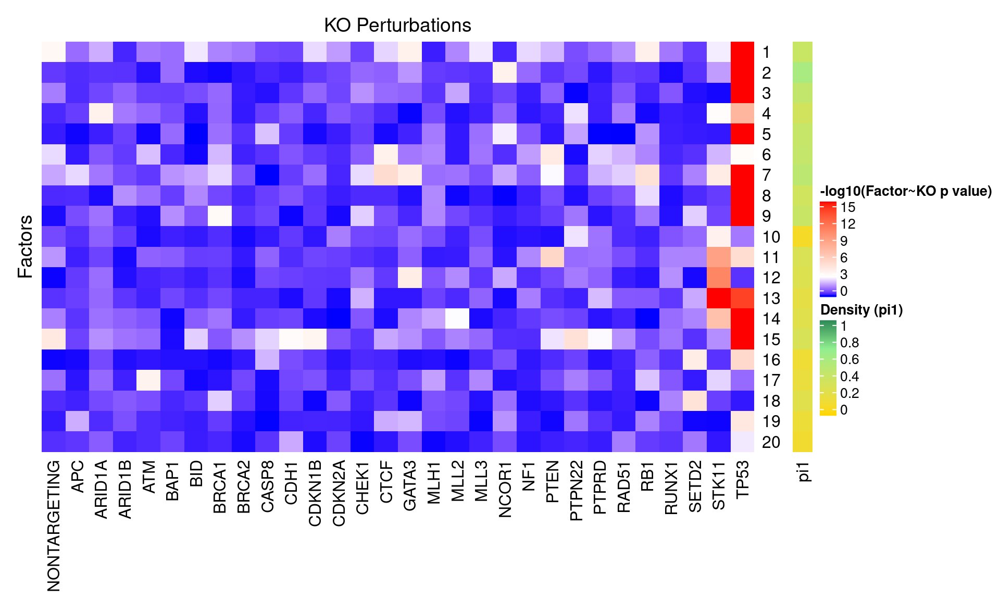
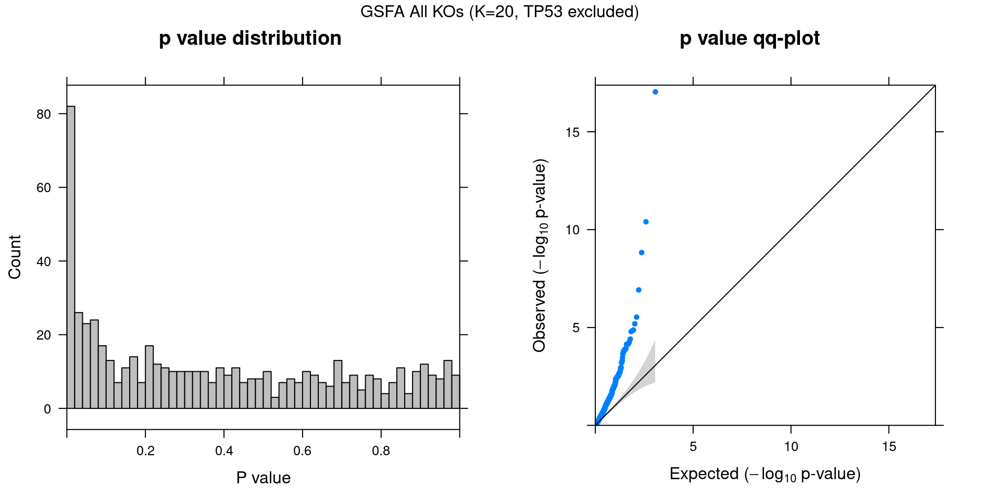
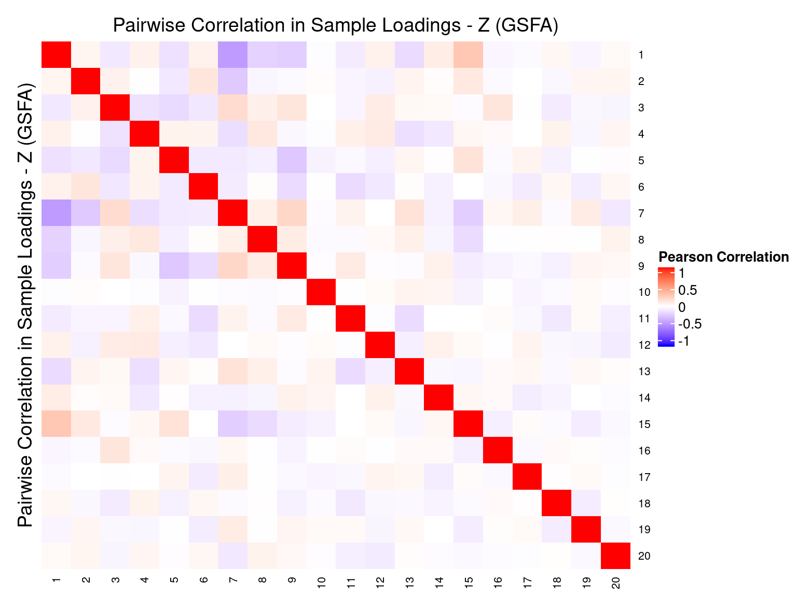
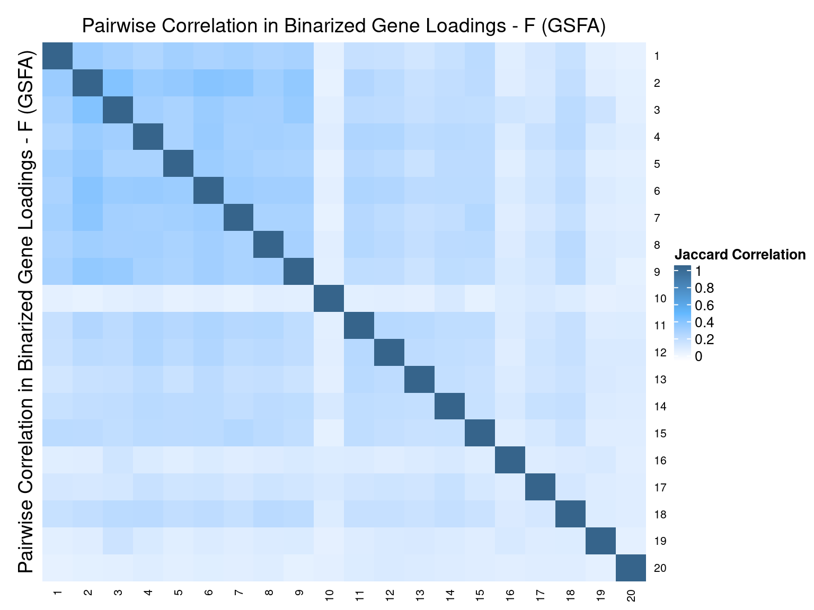
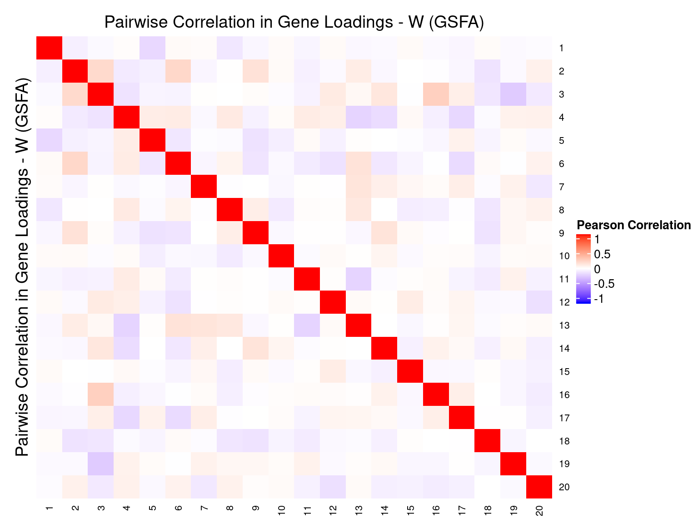

CROP-seq data are from this paper: On the design of CRISPR-based single cell molecular screens, GEO accession: GSE108699.
Perturbations:
Knock-outs of 29 tumor-suppressor genes (TP53, …), 1 non-targeting control.
Cells:
MCF10A cells (normal human breast epithelial cells) with exposure to a DNA damaging agent, doxorubicin.
Only cells with gRNA readout were kept, resulted in 5584 cells.
Genes:
Only the top 8K variable genes by vst (also detected in at least 10 cells) were kept.
Normalization:
Seurat “LogNormalize”: log(count per 10K + 1).
Library size was regressed out, and the residuals were used as input.
Guided sparse factor analysis, with the \(G\) matrix being 30 types of KO conditions across cells.


For a pair of \(Z\) estimations from 2 inference methods, \(Z_1, Z_2\), we quantify the pairwise estimation difference as \(||Z_1Z_1^T - Z_2Z_2^T||_1/N^2\), where \(N\) is the number of rows (samples) in \(Z\).



Genes w/ non-zero loadings vs all genes selected for factor analysis.
GO category: Biological Process.
GO terms that passed overrpresentation analysis fold change \(\geq\) 2 and q value \(<\) 0.05:
| ID | Description | GeneRatio | BgRatio | FoldChange | qvalue |
|---|---|---|---|---|---|
| GO:0007059 | chromosome segregation | 141/2390 | 170/5877 | 2.04 | 1.08e-27 |
| GO:0098813 | nuclear chromosome segregation | 114/2390 | 139/5877 | 2.02 | 1.48e-21 |
| GO:0000819 | sister chromatid segregation | 91/2390 | 107/5877 | 2.09 | 2.88e-19 |
| GO:0006261 | DNA-dependent DNA replication | 86/2390 | 103/5877 | 2.05 | 3.97e-17 |
| GO:0000070 | mitotic sister chromatid segregation | 79/2390 | 94/5877 | 2.07 | 5.21e-16 |
| GO:0051983 | regulation of chromosome segregation | 53/2390 | 58/5877 | 2.25 | 7.20e-14 |
| GO:0010389 | regulation of G2/M transition of mitotic cell cycle | 70/2390 | 85/5877 | 2.03 | 2.77e-13 |
| GO:0044786 | cell cycle DNA replication | 43/2390 | 45/5877 | 2.35 | 5.03e-13 |
| GO:0051304 | chromosome separation | 43/2390 | 48/5877 | 2.20 | 1.53e-10 |
| GO:0033260 | nuclear DNA replication | 36/2390 | 38/5877 | 2.33 | 1.60e-10 |
| GO:0033045 | regulation of sister chromatid segregation | 41/2390 | 46/5877 | 2.19 | 6.62e-10 |
| GO:0007062 | sister chromatid cohesion | 29/2390 | 30/5877 | 2.38 | 5.06e-09 |
| GO:0034502 | protein localization to chromosome | 41/2390 | 48/5877 | 2.10 | 1.05e-08 |
| GO:0033047 | regulation of mitotic sister chromatid segregation | 35/2390 | 40/5877 | 2.15 | 5.00e-08 |
| GO:0051306 | mitotic sister chromatid separation | 32/2390 | 36/5877 | 2.19 | 1.11e-07 |
| GO:0034508 | centromere complex assembly | 29/2390 | 32/5877 | 2.23 | 2.20e-07 |
| GO:0010965 | regulation of mitotic sister chromatid separation | 31/2390 | 35/5877 | 2.18 | 2.24e-07 |
| GO:1905818 | regulation of chromosome separation | 31/2390 | 35/5877 | 2.18 | 2.24e-07 |
| GO:0032201 | telomere maintenance via semi-conservative replication | 21/2390 | 21/5877 | 2.46 | 2.61e-07 |
| GO:0007091 | metaphase/anaphase transition of mitotic cell cycle | 30/2390 | 34/5877 | 2.17 | 4.53e-07 |
| GO:0044784 | metaphase/anaphase transition of cell cycle | 30/2390 | 34/5877 | 2.17 | 4.53e-07 |
| GO:0030071 | regulation of mitotic metaphase/anaphase transition | 29/2390 | 33/5877 | 2.16 | 9.28e-07 |
| GO:1902099 | regulation of metaphase/anaphase transition of cell cycle | 29/2390 | 33/5877 | 2.16 | 9.28e-07 |
| GO:0036297 | interstrand cross-link repair | 27/2390 | 30/5877 | 2.21 | 9.28e-07 |
| GO:0031055 | chromatin remodeling at centromere | 26/2390 | 29/5877 | 2.20 | 1.99e-06 |
| GO:0043044 | ATP-dependent chromatin remodeling | 33/2390 | 40/5877 | 2.03 | 2.36e-06 |
| GO:0043486 | histone exchange | 27/2390 | 31/5877 | 2.14 | 3.93e-06 |
| GO:0050000 | chromosome localization | 32/2390 | 39/5877 | 2.02 | 4.41e-06 |
| GO:0051303 | establishment of chromosome localization | 32/2390 | 39/5877 | 2.02 | 4.41e-06 |
| GO:0051310 | metaphase plate congression | 28/2390 | 33/5877 | 2.09 | 6.60e-06 |
| GO:0006297 | nucleotide-excision repair, DNA gap filling | 17/2390 | 17/5877 | 2.46 | 6.80e-06 |
| GO:0051984 | positive regulation of chromosome segregation | 17/2390 | 17/5877 | 2.46 | 6.80e-06 |
| GO:0006336 | DNA replication-independent nucleosome assembly | 26/2390 | 30/5877 | 2.13 | 7.43e-06 |
| GO:0034724 | DNA replication-independent nucleosome organization | 26/2390 | 30/5877 | 2.13 | 7.43e-06 |
| GO:0034080 | CENP-A containing nucleosome assembly | 24/2390 | 27/5877 | 2.19 | 7.72e-06 |
| GO:0061641 | CENP-A containing chromatin organization | 24/2390 | 27/5877 | 2.19 | 7.72e-06 |
| GO:1905819 | negative regulation of chromosome separation | 24/2390 | 27/5877 | 2.19 | 7.72e-06 |
| GO:2000816 | negative regulation of mitotic sister chromatid separation | 24/2390 | 27/5877 | 2.19 | 7.72e-06 |
| GO:0006613 | cotranslational protein targeting to membrane | 29/2390 | 35/5877 | 2.04 | 1.02e-05 |
| GO:0031145 | anaphase-promoting complex-dependent catabolic process | 19/2390 | 20/5877 | 2.34 | 1.24e-05 |
| GO:0033683 | nucleotide-excision repair, DNA incision | 19/2390 | 20/5877 | 2.34 | 1.24e-05 |
| GO:0033046 | negative regulation of sister chromatid segregation | 25/2390 | 29/5877 | 2.12 | 1.42e-05 |
| GO:0045005 | DNA-dependent DNA replication maintenance of fidelity | 25/2390 | 29/5877 | 2.12 | 1.42e-05 |
| GO:0051985 | negative regulation of chromosome segregation | 25/2390 | 29/5877 | 2.12 | 1.42e-05 |
| GO:0071459 | protein localization to chromosome, centromeric region | 16/2390 | 16/5877 | 2.46 | 1.46e-05 |
| GO:0042769 | DNA damage response, detection of DNA damage | 23/2390 | 26/5877 | 2.18 | 1.51e-05 |
| GO:0045841 | negative regulation of mitotic metaphase/anaphase transition | 23/2390 | 26/5877 | 2.18 | 1.51e-05 |
| GO:1902100 | negative regulation of metaphase/anaphase transition of cell cycle | 23/2390 | 26/5877 | 2.18 | 1.51e-05 |
| GO:0000731 | DNA synthesis involved in DNA repair | 26/2390 | 31/5877 | 2.06 | 2.28e-05 |
| GO:0006296 | nucleotide-excision repair, DNA incision, 5’-to lesion | 18/2390 | 19/5877 | 2.33 | 2.50e-05 |
| GO:0033048 | negative regulation of mitotic sister chromatid segregation | 24/2390 | 28/5877 | 2.11 | 2.68e-05 |
| GO:0030261 | chromosome condensation | 22/2390 | 25/5877 | 2.16 | 3.00e-05 |
| GO:0051383 | kinetochore organization | 15/2390 | 15/5877 | 2.46 | 3.15e-05 |
| GO:0006614 | SRP-dependent cotranslational protein targeting to membrane | 27/2390 | 33/5877 | 2.01 | 3.48e-05 |
| GO:0006301 | postreplication repair | 25/2390 | 30/5877 | 2.05 | 4.35e-05 |
| GO:0007094 | mitotic spindle assembly checkpoint | 21/2390 | 24/5877 | 2.15 | 5.93e-05 |
| GO:0031577 | spindle checkpoint | 21/2390 | 24/5877 | 2.15 | 5.93e-05 |
| GO:0071173 | spindle assembly checkpoint | 21/2390 | 24/5877 | 2.15 | 5.93e-05 |
| GO:0071174 | mitotic spindle checkpoint | 21/2390 | 24/5877 | 2.15 | 5.93e-05 |
| GO:0007099 | centriole replication | 20/2390 | 23/5877 | 2.14 | 1.15e-04 |
| GO:1902751 | positive regulation of cell cycle G2/M phase transition | 20/2390 | 23/5877 | 2.14 | 1.15e-04 |
| GO:0008608 | attachment of spindle microtubules to kinetochore | 18/2390 | 20/5877 | 2.21 | 1.22e-04 |
| GO:0010971 | positive regulation of G2/M transition of mitotic cell cycle | 18/2390 | 20/5877 | 2.21 | 1.22e-04 |
| GO:0034501 | protein localization to kinetochore | 13/2390 | 13/5877 | 2.46 | 1.52e-04 |
| GO:0007080 | mitotic metaphase plate congression | 21/2390 | 25/5877 | 2.07 | 1.96e-04 |
| GO:0019985 | translesion synthesis | 21/2390 | 25/5877 | 2.07 | 1.96e-04 |
| GO:0022616 | DNA strand elongation | 17/2390 | 19/5877 | 2.20 | 2.59e-04 |
| GO:0006284 | base-excision repair | 22/2390 | 27/5877 | 2.00 | 3.00e-04 |
| GO:0007131 | reciprocal meiotic recombination | 20/2390 | 24/5877 | 2.05 | 3.85e-04 |
| GO:0035825 | homologous recombination | 20/2390 | 24/5877 | 2.05 | 3.85e-04 |
| GO:0045910 | negative regulation of DNA recombination | 18/2390 | 21/5877 | 2.11 | 4.69e-04 |
| GO:1901976 | regulation of cell cycle checkpoint | 18/2390 | 21/5877 | 2.11 | 4.69e-04 |
| GO:0006271 | DNA strand elongation involved in DNA replication | 14/2390 | 15/5877 | 2.30 | 5.10e-04 |
| GO:0006298 | mismatch repair | 16/2390 | 18/5877 | 2.19 | 5.22e-04 |
| GO:0043628 | ncRNA 3’-end processing | 16/2390 | 18/5877 | 2.19 | 5.22e-04 |
| GO:0031297 | replication fork processing | 19/2390 | 23/5877 | 2.03 | 7.31e-04 |
| GO:0006312 | mitotic recombination | 11/2390 | 11/5877 | 2.46 | 7.77e-04 |
| GO:0006999 | nuclear pore organization | 11/2390 | 11/5877 | 2.46 | 7.77e-04 |
| GO:0070987 | error-free translesion synthesis | 11/2390 | 11/5877 | 2.46 | 7.77e-04 |
| GO:0042276 | error-prone translesion synthesis | 13/2390 | 14/5877 | 2.28 | 1.08e-03 |
| GO:0006270 | DNA replication initiation | 18/2390 | 22/5877 | 2.01 | 1.40e-03 |
| GO:0051382 | kinetochore assembly | 10/2390 | 10/5877 | 2.46 | 1.78e-03 |
| GO:0000083 | regulation of transcription involved in G1/S transition of mitotic cell cycle | 16/2390 | 19/5877 | 2.07 | 1.81e-03 |
| GO:0007063 | regulation of sister chromatid cohesion | 12/2390 | 13/5877 | 2.27 | 2.27e-03 |
| GO:0007064 | mitotic sister chromatid cohesion | 12/2390 | 13/5877 | 2.27 | 2.27e-03 |
| GO:0051307 | meiotic chromosome separation | 12/2390 | 13/5877 | 2.27 | 2.27e-03 |
| GO:0007143 | female meiotic nuclear division | 15/2390 | 18/5877 | 2.05 | 3.55e-03 |
| GO:0032467 | positive regulation of cytokinesis | 13/2390 | 15/5877 | 2.13 | 4.45e-03 |
| GO:0000076 | DNA replication checkpoint | 11/2390 | 12/5877 | 2.25 | 4.80e-03 |
| GO:0044766 | multi-organism transport | 11/2390 | 12/5877 | 2.25 | 4.80e-03 |
| GO:1902579 | multi-organism localization | 11/2390 | 12/5877 | 2.25 | 4.80e-03 |
| GO:0000291 | nuclear-transcribed mRNA catabolic process, exonucleolytic | 12/2390 | 14/5877 | 2.11 | 8.39e-03 |
| GO:0009264 | deoxyribonucleotide catabolic process | 12/2390 | 14/5877 | 2.11 | 8.39e-03 |
| GO:0043928 | exonucleolytic nuclear-transcribed mRNA catabolic process involved in deadenylation-dependent decay | 12/2390 | 14/5877 | 2.11 | 8.39e-03 |
| GO:0046599 | regulation of centriole replication | 12/2390 | 14/5877 | 2.11 | 8.39e-03 |
| GO:1904031 | positive regulation of cyclin-dependent protein kinase activity | 12/2390 | 14/5877 | 2.11 | 8.39e-03 |
| GO:2000104 | negative regulation of DNA-dependent DNA replication | 12/2390 | 14/5877 | 2.11 | 8.39e-03 |
| GO:2000781 | positive regulation of double-strand break repair | 12/2390 | 14/5877 | 2.11 | 8.39e-03 |
| GO:0009200 | deoxyribonucleoside triphosphate metabolic process | 11/2390 | 13/5877 | 2.08 | 1.63e-02 |
| GO:0040001 | establishment of mitotic spindle localization | 11/2390 | 13/5877 | 2.08 | 1.63e-02 |
| GO:0070734 | histone H3-K27 methylation | 9/2390 | 10/5877 | 2.21 | 1.96e-02 |
| GO:0000387 | spliceosomal snRNP assembly | 10/2390 | 12/5877 | 2.05 | 2.93e-02 |
| GO:0007076 | mitotic chromosome condensation | 10/2390 | 12/5877 | 2.05 | 2.93e-02 |
| GO:0090231 | regulation of spindle checkpoint | 10/2390 | 12/5877 | 2.05 | 2.93e-02 |
| GO:0090266 | regulation of mitotic cell cycle spindle assembly checkpoint | 10/2390 | 12/5877 | 2.05 | 2.93e-02 |
| GO:1903504 | regulation of mitotic spindle checkpoint | 10/2390 | 12/5877 | 2.05 | 2.93e-02 |
| ID | Description | GeneRatio | BgRatio | FoldChange | qvalue |
|---|---|---|---|---|---|
| GO:0045047 | protein targeting to ER | 34/2674 | 37/5877 | 2.02 | 3.61e-07 |
| GO:0006613 | cotranslational protein targeting to membrane | 32/2674 | 35/5877 | 2.01 | 1.15e-06 |
| GO:0033120 | positive regulation of RNA splicing | 14/2674 | 14/5877 | 2.20 | 6.39e-04 |
| GO:0000387 | spliceosomal snRNP assembly | 12/2674 | 12/5877 | 2.20 | 2.41e-03 |
| GO:0006378 | mRNA polyadenylation | 13/2674 | 14/5877 | 2.04 | 7.25e-03 |
| GO:1902235 | regulation of endoplasmic reticulum stress-induced intrinsic apoptotic signaling pathway | 13/2674 | 14/5877 | 2.04 | 7.25e-03 |
| GO:0000715 | nucleotide-excision repair, DNA damage recognition | 10/2674 | 10/5877 | 2.20 | 8.90e-03 |
| GO:0031581 | hemidesmosome assembly | 10/2674 | 10/5877 | 2.20 | 8.90e-03 |
| GO:0033119 | negative regulation of RNA splicing | 10/2674 | 10/5877 | 2.20 | 8.90e-03 |
| GO:0050686 | negative regulation of mRNA processing | 10/2674 | 10/5877 | 2.20 | 8.90e-03 |
| ID | Description | GeneRatio | BgRatio | FoldChange | qvalue |
|---|---|---|---|---|---|
| GO:0000184 | nuclear-transcribed mRNA catabolic process, nonsense-mediated decay | 35/2013 | 40/5877 | 2.55 | 1.37e-08 |
| GO:0006613 | cotranslational protein targeting to membrane | 31/2013 | 35/5877 | 2.59 | 6.17e-08 |
| GO:0006413 | translational initiation | 47/2013 | 63/5877 | 2.18 | 6.82e-08 |
| GO:0006614 | SRP-dependent cotranslational protein targeting to membrane | 29/2013 | 33/5877 | 2.57 | 7.65e-08 |
| GO:0045047 | protein targeting to ER | 30/2013 | 37/5877 | 2.37 | 1.21e-06 |
| GO:0072599 | establishment of protein localization to endoplasmic reticulum | 30/2013 | 38/5877 | 2.30 | 3.32e-06 |
| GO:0070972 | protein localization to endoplasmic reticulum | 35/2013 | 48/5877 | 2.13 | 6.37e-06 |
| GO:2000117 | negative regulation of cysteine-type endopeptidase activity | 29/2013 | 40/5877 | 2.12 | 8.49e-05 |
| GO:0043154 | negative regulation of cysteine-type endopeptidase activity involved in apoptotic process | 27/2013 | 37/5877 | 2.13 | 1.42e-04 |
| GO:0031581 | hemidesmosome assembly | 10/2013 | 10/5877 | 2.92 | 1.17e-03 |
| GO:0001953 | negative regulation of cell-matrix adhesion | 12/2013 | 13/5877 | 2.69 | 1.17e-03 |
| GO:0001909 | leukocyte mediated cytotoxicity | 22/2013 | 32/5877 | 2.01 | 2.66e-03 |
| GO:0001913 | T cell mediated cytotoxicity | 17/2013 | 23/5877 | 2.16 | 4.03e-03 |
| GO:0006119 | oxidative phosphorylation | 19/2013 | 27/5877 | 2.05 | 4.29e-03 |
| GO:0061045 | negative regulation of wound healing | 19/2013 | 27/5877 | 2.05 | 4.29e-03 |
| GO:0022904 | respiratory electron transport chain | 15/2013 | 20/5877 | 2.19 | 6.18e-03 |
| GO:0050819 | negative regulation of coagulation | 16/2013 | 22/5877 | 2.12 | 6.70e-03 |
| GO:0010939 | regulation of necrotic cell death | 11/2013 | 13/5877 | 2.47 | 6.94e-03 |
| GO:0010812 | negative regulation of cell-substrate adhesion | 18/2013 | 26/5877 | 2.02 | 6.94e-03 |
| GO:0030195 | negative regulation of blood coagulation | 15/2013 | 21/5877 | 2.09 | 1.17e-02 |
| GO:1900047 | negative regulation of hemostasis | 15/2013 | 21/5877 | 2.09 | 1.17e-02 |
| GO:0045214 | sarcomere organization | 10/2013 | 12/5877 | 2.43 | 1.37e-02 |
| GO:0034405 | response to fluid shear stress | 13/2013 | 18/5877 | 2.11 | 1.99e-02 |
| GO:0030239 | myofibril assembly | 14/2013 | 20/5877 | 2.04 | 2.06e-02 |
| GO:0031639 | plasminogen activation | 9/2013 | 11/5877 | 2.39 | 2.74e-02 |
| GO:0008207 | C21-steroid hormone metabolic process | 10/2013 | 13/5877 | 2.25 | 3.10e-02 |
| GO:0071675 | regulation of mononuclear cell migration | 10/2013 | 13/5877 | 2.25 | 3.10e-02 |
| GO:0097066 | response to thyroid hormone | 10/2013 | 13/5877 | 2.25 | 3.10e-02 |
| GO:0050873 | brown fat cell differentiation | 11/2013 | 15/5877 | 2.14 | 3.35e-02 |
| GO:0001912 | positive regulation of leukocyte mediated cytotoxicity | 12/2013 | 17/5877 | 2.06 | 3.38e-02 |
| GO:0031294 | lymphocyte costimulation | 12/2013 | 17/5877 | 2.06 | 3.38e-02 |
| GO:0042773 | ATP synthesis coupled electron transport | 12/2013 | 17/5877 | 2.06 | 3.38e-02 |
| GO:0042775 | mitochondrial ATP synthesis coupled electron transport | 12/2013 | 17/5877 | 2.06 | 3.38e-02 |
| GO:0031579 | membrane raft organization | 8/2013 | 10/5877 | 2.34 | 4.86e-02 |
| GO:0033119 | negative regulation of RNA splicing | 8/2013 | 10/5877 | 2.34 | 4.86e-02 |
| GO:0051560 | mitochondrial calcium ion homeostasis | 8/2013 | 10/5877 | 2.34 | 4.86e-02 |
| GO:0060544 | regulation of necroptotic process | 8/2013 | 10/5877 | 2.34 | 4.86e-02 |
| ID | Description | GeneRatio | BgRatio | FoldChange | qvalue |
|---|---|---|---|---|---|
| GO:0001953 | negative regulation of cell-matrix adhesion | 11/2314 | 13/5877 | 2.15 | 0.0405 |
| GO:0002479 | antigen processing and presentation of exogenous peptide antigen via MHC class I, TAP-dependent | 9/2314 | 10/5877 | 2.29 | 0.0478 |
| GO:0008210 | estrogen metabolic process | 9/2314 | 10/5877 | 2.29 | 0.0478 |
| GO:0050718 | positive regulation of interleukin-1 beta secretion | 9/2314 | 10/5877 | 2.29 | 0.0478 |
| GO:0051383 | kinetochore organization | 12/2314 | 15/5877 | 2.03 | 0.0499 |
| ID | Description | GeneRatio | BgRatio | FoldChange | qvalue |
|---|---|---|---|---|---|
| GO:0070125 | mitochondrial translational elongation | 31/2522 | 36/5877 | 2.01 | 2.12e-05 |
| GO:0070126 | mitochondrial translational termination | 31/2522 | 36/5877 | 2.01 | 2.12e-05 |
| GO:1902175 | regulation of oxidative stress-induced intrinsic apoptotic signaling pathway | 10/2522 | 10/5877 | 2.33 | 9.29e-03 |
| GO:0045601 | regulation of endothelial cell differentiation | 10/2522 | 11/5877 | 2.12 | 3.72e-02 |
| ID | Description | GeneRatio | BgRatio | FoldChange | qvalue |
|---|---|---|---|---|---|
| GO:0097178 | ruffle assembly | 14/2684 | 15/5877 | 2.04 | 0.0159 |
| GO:0008210 | estrogen metabolic process | 10/2684 | 10/5877 | 2.19 | 0.0247 |
| ID | Description | GeneRatio | BgRatio | FoldChange | qvalue |
|---|---|---|---|---|---|
| GO:0006415 | translational termination | 29/1943 | 41/5877 | 2.14 | 0.00155 |
| GO:0070126 | mitochondrial translational termination | 26/1943 | 36/5877 | 2.18 | 0.00205 |
| GO:0000184 | nuclear-transcribed mRNA catabolic process, nonsense-mediated decay | 27/1943 | 40/5877 | 2.04 | 0.00384 |
| GO:0070125 | mitochondrial translational elongation | 25/1943 | 36/5877 | 2.10 | 0.00384 |
| GO:0031581 | hemidesmosome assembly | 10/1943 | 10/5877 | 3.02 | 0.00525 |
| GO:0031145 | anaphase-promoting complex-dependent catabolic process | 16/1943 | 20/5877 | 2.42 | 0.00525 |
| GO:0002548 | monocyte chemotaxis | 12/1943 | 14/5877 | 2.59 | 0.00771 |
| GO:0006614 | SRP-dependent cotranslational protein targeting to membrane | 22/1943 | 33/5877 | 2.02 | 0.00778 |
| GO:0051438 | regulation of ubiquitin-protein transferase activity | 17/1943 | 24/5877 | 2.14 | 0.01387 |
| GO:0061844 | antimicrobial humoral immune response mediated by antimicrobial peptide | 14/1943 | 19/5877 | 2.23 | 0.01976 |
| ID | Description | GeneRatio | BgRatio | FoldChange | qvalue |
|---|---|---|---|---|---|
| GO:0022613 | ribonucleoprotein complex biogenesis | 153/2201 | 198/5877 | 2.06 | 6.38e-28 |
| GO:0042254 | ribosome biogenesis | 117/2201 | 138/5877 | 2.26 | 6.38e-28 |
| GO:0034470 | ncRNA processing | 129/2201 | 170/5877 | 2.03 | 3.40e-22 |
| GO:0016072 | rRNA metabolic process | 100/2201 | 123/5877 | 2.17 | 5.64e-21 |
| GO:0006364 | rRNA processing | 90/2201 | 107/5877 | 2.25 | 7.81e-21 |
| GO:0042274 | ribosomal small subunit biogenesis | 32/2201 | 35/5877 | 2.44 | 5.66e-09 |
| GO:0006413 | translational initiation | 49/2201 | 63/5877 | 2.08 | 1.01e-08 |
| GO:0042273 | ribosomal large subunit biogenesis | 32/2201 | 36/5877 | 2.37 | 2.56e-08 |
| GO:0006405 | RNA export from nucleus | 46/2201 | 61/5877 | 2.01 | 1.51e-07 |
| GO:0006614 | SRP-dependent cotranslational protein targeting to membrane | 29/2201 | 33/5877 | 2.35 | 2.58e-07 |
| GO:0006613 | cotranslational protein targeting to membrane | 30/2201 | 35/5877 | 2.29 | 4.62e-07 |
| GO:0042255 | ribosome assembly | 26/2201 | 29/5877 | 2.39 | 6.36e-07 |
| GO:0045047 | protein targeting to ER | 31/2201 | 37/5877 | 2.24 | 7.29e-07 |
| GO:0006414 | translational elongation | 40/2201 | 53/5877 | 2.02 | 1.25e-06 |
| GO:0030490 | maturation of SSU-rRNA | 23/2201 | 25/5877 | 2.46 | 1.26e-06 |
| GO:0072599 | establishment of protein localization to endoplasmic reticulum | 31/2201 | 38/5877 | 2.18 | 1.85e-06 |
| GO:0000184 | nuclear-transcribed mRNA catabolic process, nonsense-mediated decay | 32/2201 | 40/5877 | 2.14 | 2.59e-06 |
| GO:0070972 | protein localization to endoplasmic reticulum | 36/2201 | 48/5877 | 2.00 | 6.63e-06 |
| GO:0006415 | translational termination | 31/2201 | 41/5877 | 2.02 | 3.29e-05 |
| GO:0070125 | mitochondrial translational elongation | 28/2201 | 36/5877 | 2.08 | 4.11e-05 |
| GO:0070126 | mitochondrial translational termination | 28/2201 | 36/5877 | 2.08 | 4.11e-05 |
| GO:0006119 | oxidative phosphorylation | 22/2201 | 27/5877 | 2.18 | 1.47e-04 |
| GO:0000027 | ribosomal large subunit assembly | 14/2201 | 15/5877 | 2.49 | 3.95e-04 |
| GO:0000462 | maturation of SSU-rRNA from tricistronic rRNA transcript (SSU-rRNA, 5.8S rRNA, LSU-rRNA) | 15/2201 | 17/5877 | 2.36 | 8.32e-04 |
| GO:0000460 | maturation of 5.8S rRNA | 14/2201 | 16/5877 | 2.34 | 1.88e-03 |
| GO:0000469 | cleavage involved in rRNA processing | 14/2201 | 16/5877 | 2.34 | 1.88e-03 |
| GO:0006360 | transcription by RNA polymerase I | 19/2201 | 25/5877 | 2.03 | 3.16e-03 |
| GO:0000466 | maturation of 5.8S rRNA from tricistronic rRNA transcript (SSU-rRNA, 5.8S rRNA, LSU-rRNA) | 13/2201 | 15/5877 | 2.31 | 3.76e-03 |
| GO:0070198 | protein localization to chromosome, telomeric region | 13/2201 | 15/5877 | 2.31 | 3.76e-03 |
| GO:0006361 | transcription initiation from RNA polymerase I promoter | 10/2201 | 11/5877 | 2.43 | 1.04e-02 |
| GO:0006418 | tRNA aminoacylation for protein translation | 10/2201 | 11/5877 | 2.43 | 1.04e-02 |
| GO:0043628 | ncRNA 3’-end processing | 14/2201 | 18/5877 | 2.08 | 1.40e-02 |
| GO:2000142 | regulation of DNA-templated transcription, initiation | 14/2201 | 18/5877 | 2.08 | 1.40e-02 |
| GO:0030212 | hyaluronan metabolic process | 11/2201 | 13/5877 | 2.26 | 1.51e-02 |
| GO:0045070 | positive regulation of viral genome replication | 11/2201 | 13/5877 | 2.26 | 1.51e-02 |
| GO:0033108 | mitochondrial respiratory chain complex assembly | 15/2201 | 20/5877 | 2.00 | 1.57e-02 |
| GO:0016074 | snoRNA metabolic process | 9/2201 | 10/5877 | 2.40 | 1.92e-02 |
| GO:0033119 | negative regulation of RNA splicing | 9/2201 | 10/5877 | 2.40 | 1.92e-02 |
| GO:0050686 | negative regulation of mRNA processing | 9/2201 | 10/5877 | 2.40 | 1.92e-02 |
| GO:0009303 | rRNA transcription | 12/2201 | 15/5877 | 2.14 | 1.92e-02 |
| GO:0035066 | positive regulation of histone acetylation | 12/2201 | 15/5877 | 2.14 | 1.92e-02 |
| GO:0043631 | RNA polyadenylation | 12/2201 | 15/5877 | 2.14 | 1.92e-02 |
| GO:2000144 | positive regulation of DNA-templated transcription, initiation | 12/2201 | 15/5877 | 2.14 | 1.92e-02 |
| GO:0000154 | rRNA modification | 13/2201 | 17/5877 | 2.04 | 2.30e-02 |
| GO:0032781 | positive regulation of ATPase activity | 13/2201 | 17/5877 | 2.04 | 2.30e-02 |
| GO:0042026 | protein refolding | 13/2201 | 17/5877 | 2.04 | 2.30e-02 |
| GO:0042773 | ATP synthesis coupled electron transport | 13/2201 | 17/5877 | 2.04 | 2.30e-02 |
| GO:0042775 | mitochondrial ATP synthesis coupled electron transport | 13/2201 | 17/5877 | 2.04 | 2.30e-02 |
| GO:0000291 | nuclear-transcribed mRNA catabolic process, exonucleolytic | 11/2201 | 14/5877 | 2.10 | 3.42e-02 |
| GO:0006378 | mRNA polyadenylation | 11/2201 | 14/5877 | 2.10 | 3.42e-02 |
| GO:0033120 | positive regulation of RNA splicing | 11/2201 | 14/5877 | 2.10 | 3.42e-02 |
| GO:0043928 | exonucleolytic nuclear-transcribed mRNA catabolic process involved in deadenylation-dependent decay | 11/2201 | 14/5877 | 2.10 | 3.42e-02 |
| GO:0000959 | mitochondrial RNA metabolic process | 12/2201 | 16/5877 | 2.00 | 4.03e-02 |
| GO:0006369 | termination of RNA polymerase II transcription | 12/2201 | 16/5877 | 2.00 | 4.03e-02 |
| GO:2000758 | positive regulation of peptidyl-lysine acetylation | 12/2201 | 16/5877 | 2.00 | 4.03e-02 |
| ID | Description | GeneRatio | BgRatio | FoldChange | qvalue |
|---|---|---|---|---|---|
| GO:0006613 | cotranslational protein targeting to membrane | 27/425 | 35/5877 | 10.70 | 3.11e-21 |
| GO:0006614 | SRP-dependent cotranslational protein targeting to membrane | 26/425 | 33/5877 | 10.90 | 4.43e-21 |
| GO:0045047 | protein targeting to ER | 27/425 | 37/5877 | 10.10 | 1.34e-20 |
| GO:0072599 | establishment of protein localization to endoplasmic reticulum | 27/425 | 38/5877 | 9.83 | 3.25e-20 |
| GO:0000184 | nuclear-transcribed mRNA catabolic process, nonsense-mediated decay | 27/425 | 40/5877 | 9.33 | 2.27e-19 |
| GO:0006413 | translational initiation | 33/425 | 63/5877 | 7.24 | 4.14e-19 |
| GO:0070972 | protein localization to endoplasmic reticulum | 29/425 | 48/5877 | 8.35 | 4.78e-19 |
| GO:0006518 | peptide metabolic process | 68/425 | 273/5877 | 3.44 | 2.37e-18 |
| GO:0006412 | translation | 59/425 | 219/5877 | 3.73 | 1.74e-17 |
| GO:0043043 | peptide biosynthetic process | 59/425 | 232/5877 | 3.52 | 3.41e-16 |
| GO:0006402 | mRNA catabolic process | 39/425 | 113/5877 | 4.77 | 4.06e-15 |
| GO:0006612 | protein targeting to membrane | 30/425 | 69/5877 | 6.01 | 1.34e-14 |
| GO:0000956 | nuclear-transcribed mRNA catabolic process | 32/425 | 81/5877 | 5.46 | 3.29e-14 |
| GO:0006605 | protein targeting | 42/425 | 142/5877 | 4.09 | 1.02e-13 |
| GO:0006401 | RNA catabolic process | 40/425 | 131/5877 | 4.22 | 1.47e-13 |
| GO:0043603 | cellular amide metabolic process | 72/425 | 370/5877 | 2.69 | 1.93e-13 |
| GO:0043604 | amide biosynthetic process | 61/425 | 285/5877 | 2.96 | 3.90e-13 |
| GO:0034655 | nucleobase-containing compound catabolic process | 50/425 | 208/5877 | 3.32 | 1.26e-12 |
| GO:0044270 | cellular nitrogen compound catabolic process | 50/425 | 220/5877 | 3.14 | 1.23e-11 |
| GO:0046700 | heterocycle catabolic process | 50/425 | 220/5877 | 3.14 | 1.23e-11 |
| GO:0019439 | aromatic compound catabolic process | 50/425 | 222/5877 | 3.11 | 1.71e-11 |
| GO:1901361 | organic cyclic compound catabolic process | 51/425 | 236/5877 | 2.99 | 5.16e-11 |
| GO:0090150 | establishment of protein localization to membrane | 34/425 | 117/5877 | 4.02 | 7.98e-11 |
| GO:0044265 | cellular macromolecule catabolic process | 72/425 | 428/5877 | 2.33 | 3.04e-10 |
| GO:0016071 | mRNA metabolic process | 54/425 | 282/5877 | 2.65 | 1.46e-09 |
| GO:0006886 | intracellular protein transport | 66/425 | 395/5877 | 2.31 | 3.71e-09 |
| GO:0072594 | establishment of protein localization to organelle | 42/425 | 195/5877 | 2.98 | 6.71e-09 |
| GO:0022613 | ribonucleoprotein complex biogenesis | 39/425 | 198/5877 | 2.72 | 5.11e-07 |
| GO:0072657 | protein localization to membrane | 42/425 | 239/5877 | 2.43 | 4.17e-06 |
| GO:0042273 | ribosomal large subunit biogenesis | 14/425 | 36/5877 | 5.38 | 7.89e-06 |
| GO:0042254 | ribosome biogenesis | 29/425 | 138/5877 | 2.91 | 1.11e-05 |
| GO:0010608 | posttranscriptional regulation of gene expression | 35/425 | 187/5877 | 2.59 | 1.11e-05 |
| GO:0044419 | interspecies interaction between organisms | 51/425 | 341/5877 | 2.07 | 2.81e-05 |
| GO:0016072 | rRNA metabolic process | 26/425 | 123/5877 | 2.92 | 4.04e-05 |
| GO:0044403 | symbiont process | 49/425 | 333/5877 | 2.03 | 7.41e-05 |
| GO:0006364 | rRNA processing | 23/425 | 107/5877 | 2.97 | 1.31e-04 |
| GO:0022618 | ribonucleoprotein complex assembly | 21/425 | 93/5877 | 3.12 | 1.58e-04 |
| GO:0071826 | ribonucleoprotein complex subunit organization | 22/425 | 101/5877 | 3.01 | 1.67e-04 |
| GO:0045727 | positive regulation of translation | 14/425 | 46/5877 | 4.21 | 1.91e-04 |
| GO:0042255 | ribosome assembly | 11/425 | 29/5877 | 5.25 | 2.01e-04 |
| GO:0006417 | regulation of translation | 24/425 | 123/5877 | 2.70 | 3.94e-04 |
| GO:0009126 | purine nucleoside monophosphate metabolic process | 19/425 | 84/5877 | 3.13 | 3.94e-04 |
| GO:0009167 | purine ribonucleoside monophosphate metabolic process | 19/425 | 84/5877 | 3.13 | 3.94e-04 |
| GO:0034250 | positive regulation of cellular amide metabolic process | 15/425 | 56/5877 | 3.70 | 4.09e-04 |
| GO:0006091 | generation of precursor metabolites and energy | 27/425 | 152/5877 | 2.46 | 5.99e-04 |
| GO:0006119 | oxidative phosphorylation | 10/425 | 27/5877 | 5.12 | 6.11e-04 |
| GO:0009123 | nucleoside monophosphate metabolic process | 21/425 | 103/5877 | 2.82 | 6.57e-04 |
| GO:0015980 | energy derivation by oxidation of organic compounds | 17/425 | 74/5877 | 3.18 | 8.71e-04 |
| GO:0009205 | purine ribonucleoside triphosphate metabolic process | 18/425 | 82/5877 | 3.04 | 9.38e-04 |
| GO:0046034 | ATP metabolic process | 16/425 | 68/5877 | 3.25 | 1.09e-03 |
| GO:0009161 | ribonucleoside monophosphate metabolic process | 19/425 | 91/5877 | 2.89 | 1.12e-03 |
| GO:0045333 | cellular respiration | 12/425 | 41/5877 | 4.05 | 1.12e-03 |
| GO:0002181 | cytoplasmic translation | 10/425 | 29/5877 | 4.77 | 1.12e-03 |
| GO:0009144 | purine nucleoside triphosphate metabolic process | 18/425 | 86/5877 | 2.89 | 1.71e-03 |
| GO:0009199 | ribonucleoside triphosphate metabolic process | 18/425 | 87/5877 | 2.86 | 1.98e-03 |
| GO:0009060 | aerobic respiration | 8/425 | 21/5877 | 5.27 | 3.23e-03 |
| GO:0006414 | translational elongation | 13/425 | 53/5877 | 3.39 | 3.69e-03 |
| GO:0002444 | myeloid leukocyte mediated immunity | 30/425 | 201/5877 | 2.06 | 4.78e-03 |
| GO:0042773 | ATP synthesis coupled electron transport | 7/425 | 17/5877 | 5.69 | 4.83e-03 |
| GO:0042775 | mitochondrial ATP synthesis coupled electron transport | 7/425 | 17/5877 | 5.69 | 4.83e-03 |
| GO:0009141 | nucleoside triphosphate metabolic process | 19/425 | 102/5877 | 2.58 | 4.84e-03 |
| GO:0034248 | regulation of cellular amide metabolic process | 24/425 | 146/5877 | 2.27 | 4.95e-03 |
| GO:0052547 | regulation of peptidase activity | 27/425 | 174/5877 | 2.15 | 5.07e-03 |
| GO:0042274 | ribosomal small subunit biogenesis | 10/425 | 35/5877 | 3.95 | 5.61e-03 |
| GO:0010257 | NADH dehydrogenase complex assembly | 6/425 | 13/5877 | 6.38 | 6.66e-03 |
| GO:0032981 | mitochondrial respiratory chain complex I assembly | 6/425 | 13/5877 | 6.38 | 6.66e-03 |
| GO:0002446 | neutrophil mediated immunity | 28/425 | 187/5877 | 2.07 | 6.66e-03 |
| GO:0042119 | neutrophil activation | 28/425 | 187/5877 | 2.07 | 6.66e-03 |
| GO:0070125 | mitochondrial translational elongation | 10/425 | 36/5877 | 3.84 | 6.70e-03 |
| GO:0070126 | mitochondrial translational termination | 10/425 | 36/5877 | 3.84 | 6.70e-03 |
| GO:0036230 | granulocyte activation | 28/425 | 188/5877 | 2.06 | 6.99e-03 |
| GO:0043299 | leukocyte degranulation | 29/425 | 199/5877 | 2.02 | 7.74e-03 |
| GO:0032543 | mitochondrial translation | 12/425 | 52/5877 | 3.19 | 9.58e-03 |
| GO:0002283 | neutrophil activation involved in immune response | 27/425 | 185/5877 | 2.02 | 1.15e-02 |
| GO:0043312 | neutrophil degranulation | 27/425 | 185/5877 | 2.02 | 1.15e-02 |
| GO:0052548 | regulation of endopeptidase activity | 25/425 | 166/5877 | 2.08 | 1.16e-02 |
| GO:0045861 | negative regulation of proteolysis | 21/425 | 129/5877 | 2.25 | 1.17e-02 |
| GO:0022904 | respiratory electron transport chain | 7/425 | 20/5877 | 4.84 | 1.17e-02 |
| GO:0033108 | mitochondrial respiratory chain complex assembly | 7/425 | 20/5877 | 4.84 | 1.17e-02 |
| GO:0000027 | ribosomal large subunit assembly | 6/425 | 15/5877 | 5.53 | 1.36e-02 |
| GO:0009145 | purine nucleoside triphosphate biosynthetic process | 10/425 | 40/5877 | 3.46 | 1.41e-02 |
| GO:0009206 | purine ribonucleoside triphosphate biosynthetic process | 10/425 | 40/5877 | 3.46 | 1.41e-02 |
| GO:0034470 | ncRNA processing | 25/425 | 170/5877 | 2.03 | 1.52e-02 |
| GO:0006415 | translational termination | 10/425 | 41/5877 | 3.37 | 1.65e-02 |
| GO:0032984 | protein-containing complex disassembly | 19/425 | 115/5877 | 2.28 | 1.65e-02 |
| GO:0051702 | interaction with symbiont | 8/425 | 29/5877 | 3.81 | 2.42e-02 |
| GO:0035966 | response to topologically incorrect protein | 16/425 | 92/5877 | 2.40 | 2.46e-02 |
| GO:0042026 | protein refolding | 6/425 | 17/5877 | 4.88 | 2.63e-02 |
| GO:1903311 | regulation of mRNA metabolic process | 16/425 | 93/5877 | 2.38 | 2.72e-02 |
| GO:0006986 | response to unfolded protein | 15/425 | 85/5877 | 2.44 | 2.96e-02 |
| GO:0009201 | ribonucleoside triphosphate biosynthetic process | 10/425 | 45/5877 | 3.07 | 3.35e-02 |
| GO:0009409 | response to cold | 7/425 | 24/5877 | 4.03 | 3.40e-02 |
| GO:0051100 | negative regulation of binding | 14/425 | 78/5877 | 2.48 | 3.55e-02 |
| GO:0009127 | purine nucleoside monophosphate biosynthetic process | 10/425 | 46/5877 | 3.01 | 3.84e-02 |
| GO:0009168 | purine ribonucleoside monophosphate biosynthetic process | 10/425 | 46/5877 | 3.01 | 3.84e-02 |
| GO:0140053 | mitochondrial gene expression | 12/425 | 62/5877 | 2.68 | 3.84e-02 |
| GO:0031638 | zymogen activation | 7/425 | 25/5877 | 3.87 | 4.16e-02 |
| GO:0043624 | cellular protein complex disassembly | 14/425 | 80/5877 | 2.42 | 4.29e-02 |
| GO:0009142 | nucleoside triphosphate biosynthetic process | 11/425 | 55/5877 | 2.77 | 4.41e-02 |
| GO:0071674 | mononuclear cell migration | 6/425 | 19/5877 | 4.37 | 4.48e-02 |
| GO:0010951 | negative regulation of endopeptidase activity | 15/425 | 90/5877 | 2.30 | 4.76e-02 |
| GO:0016485 | protein processing | 15/425 | 90/5877 | 2.30 | 4.76e-02 |
| ID | Description | GeneRatio | BgRatio | FoldChange | qvalue |
|---|---|---|---|---|---|
| GO:0030216 | keratinocyte differentiation | 53/1510 | 99/5877 | 2.08 | 4.93e-07 |
| GO:0002573 | myeloid leukocyte differentiation | 40/1510 | 77/5877 | 2.02 | 3.33e-05 |
| GO:1903039 | positive regulation of leukocyte cell-cell adhesion | 40/1510 | 77/5877 | 2.02 | 3.33e-05 |
| GO:0061844 | antimicrobial humoral immune response mediated by antimicrobial peptide | 15/1510 | 19/5877 | 3.07 | 7.21e-05 |
| GO:0006959 | humoral immune response | 34/1510 | 64/5877 | 2.07 | 8.87e-05 |
| GO:0019730 | antimicrobial humoral response | 20/1510 | 30/5877 | 2.59 | 1.01e-04 |
| GO:0031424 | keratinization | 30/1510 | 56/5877 | 2.09 | 2.18e-04 |
| GO:1902106 | negative regulation of leukocyte differentiation | 20/1510 | 32/5877 | 2.43 | 3.21e-04 |
| GO:0007044 | cell-substrate junction assembly | 28/1510 | 54/5877 | 2.02 | 7.49e-04 |
| GO:0001836 | release of cytochrome c from mitochondria | 18/1510 | 29/5877 | 2.42 | 8.12e-04 |
| GO:0085029 | extracellular matrix assembly | 10/1510 | 12/5877 | 3.24 | 9.40e-04 |
| GO:0060333 | interferon-gamma-mediated signaling pathway | 23/1510 | 42/5877 | 2.13 | 1.02e-03 |
| GO:0030316 | osteoclast differentiation | 21/1510 | 37/5877 | 2.21 | 1.04e-03 |
| GO:0043627 | response to estrogen | 18/1510 | 30/5877 | 2.34 | 1.19e-03 |
| GO:0014910 | regulation of smooth muscle cell migration | 14/1510 | 21/5877 | 2.59 | 1.40e-03 |
| GO:0002761 | regulation of myeloid leukocyte differentiation | 22/1510 | 41/5877 | 2.09 | 1.73e-03 |
| GO:0045639 | positive regulation of myeloid cell differentiation | 20/1510 | 36/5877 | 2.16 | 1.85e-03 |
| GO:0048147 | negative regulation of fibroblast proliferation | 9/1510 | 11/5877 | 3.18 | 2.20e-03 |
| GO:0043620 | regulation of DNA-templated transcription in response to stress | 21/1510 | 39/5877 | 2.10 | 2.20e-03 |
| GO:0045670 | regulation of osteoclast differentiation | 14/1510 | 22/5877 | 2.48 | 2.53e-03 |
| GO:0014812 | muscle cell migration | 18/1510 | 32/5877 | 2.19 | 2.87e-03 |
| GO:0014909 | smooth muscle cell migration | 15/1510 | 25/5877 | 2.34 | 3.57e-03 |
| GO:0002762 | negative regulation of myeloid leukocyte differentiation | 11/1510 | 16/5877 | 2.68 | 4.25e-03 |
| GO:0046824 | positive regulation of nucleocytoplasmic transport | 16/1510 | 28/5877 | 2.22 | 4.55e-03 |
| GO:0019731 | antibacterial humoral response | 10/1510 | 14/5877 | 2.78 | 4.80e-03 |
| GO:0042475 | odontogenesis of dentin-containing tooth | 19/1510 | 36/5877 | 2.05 | 4.97e-03 |
| GO:0043618 | regulation of transcription from RNA polymerase II promoter in response to stress | 19/1510 | 36/5877 | 2.05 | 4.97e-03 |
| GO:0048145 | regulation of fibroblast proliferation | 19/1510 | 36/5877 | 2.05 | 4.97e-03 |
| GO:0001942 | hair follicle development | 18/1510 | 34/5877 | 2.06 | 6.15e-03 |
| GO:0022404 | molting cycle process | 18/1510 | 34/5877 | 2.06 | 6.15e-03 |
| GO:0022405 | hair cycle process | 18/1510 | 34/5877 | 2.06 | 6.15e-03 |
| GO:0043407 | negative regulation of MAP kinase activity | 18/1510 | 34/5877 | 2.06 | 6.15e-03 |
| GO:0009409 | response to cold | 14/1510 | 24/5877 | 2.27 | 6.78e-03 |
| GO:0031663 | lipopolysaccharide-mediated signaling pathway | 14/1510 | 24/5877 | 2.27 | 6.78e-03 |
| GO:0030224 | monocyte differentiation | 11/1510 | 17/5877 | 2.52 | 7.54e-03 |
| GO:1903131 | mononuclear cell differentiation | 11/1510 | 17/5877 | 2.52 | 7.54e-03 |
| GO:0061045 | negative regulation of wound healing | 15/1510 | 27/5877 | 2.16 | 8.24e-03 |
| GO:0061614 | pri-miRNA transcription by RNA polymerase II | 13/1510 | 22/5877 | 2.30 | 8.24e-03 |
| GO:0006613 | cotranslational protein targeting to membrane | 18/1510 | 35/5877 | 2.00 | 8.53e-03 |
| GO:0048010 | vascular endothelial growth factor receptor signaling pathway | 18/1510 | 35/5877 | 2.00 | 8.53e-03 |
| GO:0072577 | endothelial cell apoptotic process | 12/1510 | 20/5877 | 2.34 | 1.03e-02 |
| GO:0006614 | SRP-dependent cotranslational protein targeting to membrane | 17/1510 | 33/5877 | 2.00 | 1.09e-02 |
| GO:0042036 | negative regulation of cytokine biosynthetic process | 8/1510 | 11/5877 | 2.83 | 1.20e-02 |
| GO:0071498 | cellular response to fluid shear stress | 8/1510 | 11/5877 | 2.83 | 1.20e-02 |
| GO:0034405 | response to fluid shear stress | 11/1510 | 18/5877 | 2.38 | 1.27e-02 |
| GO:0035722 | interleukin-12-mediated signaling pathway | 11/1510 | 18/5877 | 2.38 | 1.27e-02 |
| GO:2000351 | regulation of endothelial cell apoptotic process | 11/1510 | 18/5877 | 2.38 | 1.27e-02 |
| GO:0050918 | positive chemotaxis | 16/1510 | 31/5877 | 2.01 | 1.38e-02 |
| GO:0061097 | regulation of protein tyrosine kinase activity | 16/1510 | 31/5877 | 2.01 | 1.38e-02 |
| GO:0010517 | regulation of phospholipase activity | 14/1510 | 26/5877 | 2.10 | 1.56e-02 |
| GO:0045746 | negative regulation of Notch signaling pathway | 10/1510 | 16/5877 | 2.43 | 1.58e-02 |
| GO:0035019 | somatic stem cell population maintenance | 11/1510 | 19/5877 | 2.25 | 2.01e-02 |
| GO:0048662 | negative regulation of smooth muscle cell proliferation | 11/1510 | 19/5877 | 2.25 | 2.01e-02 |
| GO:0071349 | cellular response to interleukin-12 | 11/1510 | 19/5877 | 2.25 | 2.01e-02 |
| GO:0045599 | negative regulation of fat cell differentiation | 14/1510 | 27/5877 | 2.02 | 2.19e-02 |
| GO:0016137 | glycoside metabolic process | 8/1510 | 12/5877 | 2.59 | 2.26e-02 |
| GO:0036003 | positive regulation of transcription from RNA polymerase II promoter in response to stress | 8/1510 | 12/5877 | 2.59 | 2.26e-02 |
| GO:0032233 | positive regulation of actin filament bundle assembly | 12/1510 | 22/5877 | 2.12 | 2.36e-02 |
| GO:0048008 | platelet-derived growth factor receptor signaling pathway | 12/1510 | 22/5877 | 2.12 | 2.36e-02 |
| GO:0050819 | negative regulation of coagulation | 12/1510 | 22/5877 | 2.12 | 2.36e-02 |
| GO:0030574 | collagen catabolic process | 10/1510 | 17/5877 | 2.29 | 2.43e-02 |
| GO:0042307 | positive regulation of protein import into nucleus | 10/1510 | 17/5877 | 2.29 | 2.43e-02 |
| GO:0045620 | negative regulation of lymphocyte differentiation | 10/1510 | 17/5877 | 2.29 | 2.43e-02 |
| GO:1904591 | positive regulation of protein import | 10/1510 | 17/5877 | 2.29 | 2.43e-02 |
| GO:0031581 | hemidesmosome assembly | 7/1510 | 10/5877 | 2.72 | 2.58e-02 |
| GO:0070671 | response to interleukin-12 | 11/1510 | 20/5877 | 2.14 | 2.90e-02 |
| GO:1900744 | regulation of p38MAPK cascade | 11/1510 | 20/5877 | 2.14 | 2.90e-02 |
| GO:0050873 | brown fat cell differentiation | 9/1510 | 15/5877 | 2.34 | 2.99e-02 |
| GO:0045616 | regulation of keratinocyte differentiation | 12/1510 | 23/5877 | 2.03 | 3.28e-02 |
| GO:0030857 | negative regulation of epithelial cell differentiation | 10/1510 | 18/5877 | 2.16 | 3.52e-02 |
| GO:0031529 | ruffle organization | 10/1510 | 18/5877 | 2.16 | 3.52e-02 |
| GO:0051496 | positive regulation of stress fiber assembly | 10/1510 | 18/5877 | 2.16 | 3.52e-02 |
| GO:1904705 | regulation of vascular smooth muscle cell proliferation | 10/1510 | 18/5877 | 2.16 | 3.52e-02 |
| GO:1990874 | vascular smooth muscle cell proliferation | 10/1510 | 18/5877 | 2.16 | 3.52e-02 |
| GO:0002437 | inflammatory response to antigenic stimulus | 8/1510 | 13/5877 | 2.40 | 3.54e-02 |
| GO:0030513 | positive regulation of BMP signaling pathway | 8/1510 | 13/5877 | 2.40 | 3.54e-02 |
| GO:0045577 | regulation of B cell differentiation | 8/1510 | 13/5877 | 2.40 | 3.54e-02 |
| GO:0051894 | positive regulation of focal adhesion assembly | 8/1510 | 13/5877 | 2.40 | 3.54e-02 |
| GO:2000352 | negative regulation of endothelial cell apoptotic process | 8/1510 | 13/5877 | 2.40 | 3.54e-02 |
| GO:0030195 | negative regulation of blood coagulation | 11/1510 | 21/5877 | 2.04 | 4.02e-02 |
| GO:0043616 | keratinocyte proliferation | 11/1510 | 21/5877 | 2.04 | 4.02e-02 |
| GO:0090199 | regulation of release of cytochrome c from mitochondria | 11/1510 | 21/5877 | 2.04 | 4.02e-02 |
| GO:0097755 | positive regulation of blood vessel diameter | 11/1510 | 21/5877 | 2.04 | 4.02e-02 |
| GO:1900047 | negative regulation of hemostasis | 11/1510 | 21/5877 | 2.04 | 4.02e-02 |
| GO:0006007 | glucose catabolic process | 7/1510 | 11/5877 | 2.48 | 4.25e-02 |
| GO:0045601 | regulation of endothelial cell differentiation | 7/1510 | 11/5877 | 2.48 | 4.25e-02 |
| GO:0051412 | response to corticosterone | 7/1510 | 11/5877 | 2.48 | 4.25e-02 |
| GO:0072665 | protein localization to vacuole | 7/1510 | 11/5877 | 2.48 | 4.25e-02 |
| GO:0097186 | amelogenesis | 7/1510 | 11/5877 | 2.48 | 4.25e-02 |
| GO:0006882 | cellular zinc ion homeostasis | 9/1510 | 16/5877 | 2.19 | 4.27e-02 |
| GO:0043537 | negative regulation of blood vessel endothelial cell migration | 9/1510 | 16/5877 | 2.19 | 4.27e-02 |
| GO:0051385 | response to mineralocorticoid | 9/1510 | 16/5877 | 2.19 | 4.27e-02 |
| GO:0055069 | zinc ion homeostasis | 9/1510 | 16/5877 | 2.19 | 4.27e-02 |
| GO:0071353 | cellular response to interleukin-4 | 9/1510 | 16/5877 | 2.19 | 4.27e-02 |
| GO:0034394 | protein localization to cell surface | 10/1510 | 19/5877 | 2.05 | 4.93e-02 |
| GO:0046688 | response to copper ion | 10/1510 | 19/5877 | 2.05 | 4.93e-02 |
| ID | Description | GeneRatio | BgRatio | FoldChange | qvalue |
|---|---|---|---|---|---|
| GO:0030216 | keratinocyte differentiation | 47/1359 | 99/5877 | 2.05 | 1.55e-05 |
| GO:0002576 | platelet degranulation | 31/1359 | 58/5877 | 2.31 | 5.21e-05 |
| GO:0031424 | keratinization | 30/1359 | 56/5877 | 2.32 | 7.20e-05 |
| GO:0006882 | cellular zinc ion homeostasis | 13/1359 | 16/5877 | 3.51 | 1.22e-04 |
| GO:0055069 | zinc ion homeostasis | 13/1359 | 16/5877 | 3.51 | 1.22e-04 |
| GO:0014909 | smooth muscle cell migration | 17/1359 | 25/5877 | 2.94 | 1.77e-04 |
| GO:0061041 | regulation of wound healing | 27/1359 | 51/5877 | 2.29 | 2.18e-04 |
| GO:0010043 | response to zinc ion | 14/1359 | 20/5877 | 3.03 | 5.55e-04 |
| GO:0014812 | muscle cell migration | 19/1359 | 32/5877 | 2.57 | 5.55e-04 |
| GO:0071294 | cellular response to zinc ion | 9/1359 | 10/5877 | 3.89 | 7.15e-04 |
| GO:0034109 | homotypic cell-cell adhesion | 19/1359 | 33/5877 | 2.49 | 9.28e-04 |
| GO:0014910 | regulation of smooth muscle cell migration | 14/1359 | 21/5877 | 2.88 | 1.09e-03 |
| GO:0010595 | positive regulation of endothelial cell migration | 27/1359 | 57/5877 | 2.05 | 1.82e-03 |
| GO:0061045 | negative regulation of wound healing | 16/1359 | 27/5877 | 2.56 | 2.06e-03 |
| GO:0070268 | cornification | 23/1359 | 46/5877 | 2.16 | 2.10e-03 |
| GO:0033627 | cell adhesion mediated by integrin | 17/1359 | 30/5877 | 2.45 | 2.41e-03 |
| GO:0035767 | endothelial cell chemotaxis | 13/1359 | 20/5877 | 2.81 | 2.46e-03 |
| GO:0034250 | positive regulation of cellular amide metabolic process | 26/1359 | 56/5877 | 2.01 | 3.03e-03 |
| GO:0034405 | response to fluid shear stress | 12/1359 | 18/5877 | 2.88 | 3.04e-03 |
| GO:1904019 | epithelial cell apoptotic process | 20/1359 | 39/5877 | 2.22 | 3.34e-03 |
| GO:0033628 | regulation of cell adhesion mediated by integrin | 11/1359 | 16/5877 | 2.97 | 3.72e-03 |
| GO:0010812 | negative regulation of cell-substrate adhesion | 15/1359 | 26/5877 | 2.49 | 4.01e-03 |
| GO:0030195 | negative regulation of blood coagulation | 13/1359 | 21/5877 | 2.68 | 4.02e-03 |
| GO:1900047 | negative regulation of hemostasis | 13/1359 | 21/5877 | 2.68 | 4.02e-03 |
| GO:0002548 | monocyte chemotaxis | 10/1359 | 14/5877 | 3.09 | 4.20e-03 |
| GO:0071674 | mononuclear cell migration | 12/1359 | 19/5877 | 2.73 | 4.90e-03 |
| GO:0097501 | stress response to metal ion | 8/1359 | 10/5877 | 3.46 | 5.00e-03 |
| GO:1902175 | regulation of oxidative stress-induced intrinsic apoptotic signaling pathway | 8/1359 | 10/5877 | 3.46 | 5.00e-03 |
| GO:0007431 | salivary gland development | 13/1359 | 22/5877 | 2.56 | 6.17e-03 |
| GO:0050819 | negative regulation of coagulation | 13/1359 | 22/5877 | 2.56 | 6.17e-03 |
| GO:0030193 | regulation of blood coagulation | 17/1359 | 33/5877 | 2.23 | 6.70e-03 |
| GO:1900046 | regulation of hemostasis | 17/1359 | 33/5877 | 2.23 | 6.70e-03 |
| GO:1904035 | regulation of epithelial cell apoptotic process | 15/1359 | 28/5877 | 2.32 | 8.09e-03 |
| GO:0071675 | regulation of mononuclear cell migration | 9/1359 | 13/5877 | 2.99 | 9.24e-03 |
| GO:0050818 | regulation of coagulation | 17/1359 | 34/5877 | 2.16 | 9.46e-03 |
| GO:0008631 | intrinsic apoptotic signaling pathway in response to oxidative stress | 11/1359 | 18/5877 | 2.64 | 1.01e-02 |
| GO:0048146 | positive regulation of fibroblast proliferation | 14/1359 | 26/5877 | 2.33 | 1.05e-02 |
| GO:0031639 | plasminogen activation | 8/1359 | 11/5877 | 3.15 | 1.07e-02 |
| GO:0071498 | cellular response to fluid shear stress | 8/1359 | 11/5877 | 3.15 | 1.07e-02 |
| GO:0072091 | regulation of stem cell proliferation | 12/1359 | 21/5877 | 2.47 | 1.21e-02 |
| GO:0010633 | negative regulation of epithelial cell migration | 16/1359 | 32/5877 | 2.16 | 1.21e-02 |
| GO:0045124 | regulation of bone resorption | 10/1359 | 16/5877 | 2.70 | 1.27e-02 |
| GO:0002761 | regulation of myeloid leukocyte differentiation | 19/1359 | 41/5877 | 2.00 | 1.31e-02 |
| GO:0070527 | platelet aggregation | 13/1359 | 24/5877 | 2.34 | 1.40e-02 |
| GO:0018149 | peptide cross-linking | 14/1359 | 27/5877 | 2.24 | 1.52e-02 |
| GO:0045604 | regulation of epidermal cell differentiation | 16/1359 | 33/5877 | 2.10 | 1.67e-02 |
| GO:0045639 | positive regulation of myeloid cell differentiation | 17/1359 | 36/5877 | 2.04 | 1.69e-02 |
| GO:0071364 | cellular response to epidermal growth factor stimulus | 12/1359 | 22/5877 | 2.36 | 1.80e-02 |
| GO:0010714 | positive regulation of collagen metabolic process | 8/1359 | 12/5877 | 2.88 | 2.04e-02 |
| GO:0032967 | positive regulation of collagen biosynthetic process | 8/1359 | 12/5877 | 2.88 | 2.04e-02 |
| GO:1903035 | negative regulation of response to wounding | 16/1359 | 34/5877 | 2.04 | 2.17e-02 |
| GO:0007435 | salivary gland morphogenesis | 11/1359 | 20/5877 | 2.38 | 2.36e-02 |
| GO:0030239 | myofibril assembly | 11/1359 | 20/5877 | 2.38 | 2.36e-02 |
| GO:0072577 | endothelial cell apoptotic process | 11/1359 | 20/5877 | 2.38 | 2.36e-02 |
| GO:0045453 | bone resorption | 12/1359 | 23/5877 | 2.26 | 2.57e-02 |
| GO:0045616 | regulation of keratinocyte differentiation | 12/1359 | 23/5877 | 2.26 | 2.57e-02 |
| GO:0070849 | response to epidermal growth factor | 12/1359 | 23/5877 | 2.26 | 2.57e-02 |
| GO:2001026 | regulation of endothelial cell chemotaxis | 9/1359 | 15/5877 | 2.59 | 2.61e-02 |
| GO:0035272 | exocrine system development | 13/1359 | 26/5877 | 2.16 | 2.70e-02 |
| GO:0051289 | protein homotetramerization | 14/1359 | 29/5877 | 2.09 | 2.80e-02 |
| GO:0035722 | interleukin-12-mediated signaling pathway | 10/1359 | 18/5877 | 2.40 | 3.02e-02 |
| GO:0090303 | positive regulation of wound healing | 11/1359 | 21/5877 | 2.27 | 3.34e-02 |
| GO:0001953 | negative regulation of cell-matrix adhesion | 8/1359 | 13/5877 | 2.66 | 3.34e-02 |
| GO:0045577 | regulation of B cell differentiation | 8/1359 | 13/5877 | 2.66 | 3.34e-02 |
| GO:0060445 | branching involved in salivary gland morphogenesis | 8/1359 | 13/5877 | 2.66 | 3.34e-02 |
| GO:0061436 | establishment of skin barrier | 8/1359 | 13/5877 | 2.66 | 3.34e-02 |
| GO:0030858 | positive regulation of epithelial cell differentiation | 12/1359 | 24/5877 | 2.16 | 3.55e-02 |
| GO:0055013 | cardiac muscle cell development | 12/1359 | 24/5877 | 2.16 | 3.55e-02 |
| GO:0006119 | oxidative phosphorylation | 13/1359 | 27/5877 | 2.08 | 3.61e-02 |
| GO:0019730 | antimicrobial humoral response | 14/1359 | 30/5877 | 2.02 | 3.61e-02 |
| GO:0042632 | cholesterol homeostasis | 14/1359 | 30/5877 | 2.02 | 3.61e-02 |
| GO:0055092 | sterol homeostasis | 14/1359 | 30/5877 | 2.02 | 3.61e-02 |
| GO:0071353 | cellular response to interleukin-4 | 9/1359 | 16/5877 | 2.43 | 3.96e-02 |
| GO:1904036 | negative regulation of epithelial cell apoptotic process | 9/1359 | 16/5877 | 2.43 | 3.96e-02 |
| GO:0030049 | muscle filament sliding | 7/1359 | 11/5877 | 2.75 | 4.22e-02 |
| GO:0033275 | actin-myosin filament sliding | 7/1359 | 11/5877 | 2.75 | 4.22e-02 |
| GO:0043277 | apoptotic cell clearance | 10/1359 | 19/5877 | 2.28 | 4.27e-02 |
| GO:0046850 | regulation of bone remodeling | 10/1359 | 19/5877 | 2.28 | 4.27e-02 |
| GO:0071349 | cellular response to interleukin-12 | 10/1359 | 19/5877 | 2.28 | 4.27e-02 |
| GO:2001239 | regulation of extrinsic apoptotic signaling pathway in absence of ligand | 10/1359 | 19/5877 | 2.28 | 4.27e-02 |
| GO:0033077 | T cell differentiation in thymus | 11/1359 | 22/5877 | 2.16 | 4.40e-02 |
| GO:0035987 | endodermal cell differentiation | 11/1359 | 22/5877 | 2.16 | 4.40e-02 |
| GO:1903036 | positive regulation of response to wounding | 11/1359 | 22/5877 | 2.16 | 4.40e-02 |
| GO:0006801 | superoxide metabolic process | 12/1359 | 25/5877 | 2.08 | 4.48e-02 |
| GO:0031638 | zymogen activation | 12/1359 | 25/5877 | 2.08 | 4.48e-02 |
| GO:0055006 | cardiac cell development | 13/1359 | 28/5877 | 2.01 | 4.49e-02 |
| GO:0010837 | regulation of keratinocyte proliferation | 8/1359 | 14/5877 | 2.47 | 4.83e-02 |
| GO:0030225 | macrophage differentiation | 8/1359 | 14/5877 | 2.47 | 4.83e-02 |
| GO:0033561 | regulation of water loss via skin | 8/1359 | 14/5877 | 2.47 | 4.83e-02 |
| ID | Description | GeneRatio | BgRatio | FoldChange | qvalue |
|---|---|---|---|---|---|
| GO:0030198 | extracellular matrix organization | 60/1066 | 151/5877 | 2.19 | 1.64e-07 |
| GO:0034330 | cell junction organization | 59/1066 | 148/5877 | 2.20 | 1.64e-07 |
| GO:0043062 | extracellular structure organization | 65/1066 | 170/5877 | 2.11 | 1.64e-07 |
| GO:0007044 | cell-substrate junction assembly | 29/1066 | 54/5877 | 2.96 | 8.71e-07 |
| GO:0034329 | cell junction assembly | 49/1066 | 123/5877 | 2.20 | 1.68e-06 |
| GO:0043588 | skin development | 57/1066 | 153/5877 | 2.05 | 1.74e-06 |
| GO:0031581 | hemidesmosome assembly | 10/1066 | 10/5877 | 5.51 | 3.79e-06 |
| GO:0030216 | keratinocyte differentiation | 41/1066 | 99/5877 | 2.28 | 4.48e-06 |
| GO:0031589 | cell-substrate adhesion | 53/1066 | 143/5877 | 2.04 | 4.51e-06 |
| GO:0051146 | striated muscle cell differentiation | 37/1066 | 93/5877 | 2.19 | 3.92e-05 |
| GO:0009913 | epidermal cell differentiation | 44/1066 | 121/5877 | 2.00 | 6.10e-05 |
| GO:0097191 | extrinsic apoptotic signaling pathway | 40/1066 | 106/5877 | 2.08 | 6.15e-05 |
| GO:0007160 | cell-matrix adhesion | 37/1066 | 95/5877 | 2.15 | 6.20e-05 |
| GO:0048659 | smooth muscle cell proliferation | 26/1066 | 57/5877 | 2.51 | 7.21e-05 |
| GO:0032103 | positive regulation of response to external stimulus | 38/1066 | 100/5877 | 2.09 | 8.44e-05 |
| GO:0002576 | platelet degranulation | 26/1066 | 58/5877 | 2.47 | 9.21e-05 |
| GO:0048660 | regulation of smooth muscle cell proliferation | 25/1066 | 56/5877 | 2.46 | 1.48e-04 |
| GO:0050920 | regulation of chemotaxis | 31/1066 | 77/5877 | 2.22 | 1.54e-04 |
| GO:0030856 | regulation of epithelial cell differentiation | 26/1066 | 61/5877 | 2.35 | 2.30e-04 |
| GO:0050921 | positive regulation of chemotaxis | 23/1066 | 51/5877 | 2.49 | 2.38e-04 |
| GO:0045445 | myoblast differentiation | 20/1066 | 42/5877 | 2.63 | 3.09e-04 |
| GO:0031032 | actomyosin structure organization | 29/1066 | 73/5877 | 2.19 | 3.15e-04 |
| GO:0051897 | positive regulation of protein kinase B signaling | 27/1066 | 66/5877 | 2.26 | 3.30e-04 |
| GO:0010810 | regulation of cell-substrate adhesion | 33/1066 | 88/5877 | 2.07 | 3.36e-04 |
| GO:0002688 | regulation of leukocyte chemotaxis | 18/1066 | 36/5877 | 2.76 | 3.44e-04 |
| GO:0061045 | negative regulation of wound healing | 15/1066 | 27/5877 | 3.06 | 3.51e-04 |
| GO:0031424 | keratinization | 24/1066 | 56/5877 | 2.36 | 3.66e-04 |
| GO:0050819 | negative regulation of coagulation | 13/1066 | 22/5877 | 3.26 | 5.08e-04 |
| GO:0008625 | extrinsic apoptotic signaling pathway via death domain receptors | 17/1066 | 34/5877 | 2.76 | 5.42e-04 |
| GO:0030595 | leukocyte chemotaxis | 28/1066 | 72/5877 | 2.14 | 5.97e-04 |
| GO:0071280 | cellular response to copper ion | 9/1066 | 12/5877 | 4.13 | 6.07e-04 |
| GO:0061041 | regulation of wound healing | 22/1066 | 51/5877 | 2.38 | 6.45e-04 |
| GO:0033002 | muscle cell proliferation | 31/1066 | 84/5877 | 2.03 | 7.20e-04 |
| GO:0071294 | cellular response to zinc ion | 8/1066 | 10/5877 | 4.41 | 7.81e-04 |
| GO:0097501 | stress response to metal ion | 8/1066 | 10/5877 | 4.41 | 7.81e-04 |
| GO:0097529 | myeloid leukocyte migration | 26/1066 | 66/5877 | 2.17 | 8.15e-04 |
| GO:0002690 | positive regulation of leukocyte chemotaxis | 15/1066 | 29/5877 | 2.85 | 8.72e-04 |
| GO:0061572 | actin filament bundle organization | 25/1066 | 63/5877 | 2.19 | 9.31e-04 |
| GO:0030195 | negative regulation of blood coagulation | 12/1066 | 21/5877 | 3.15 | 1.27e-03 |
| GO:1900047 | negative regulation of hemostasis | 12/1066 | 21/5877 | 3.15 | 1.27e-03 |
| GO:0097530 | granulocyte migration | 19/1066 | 44/5877 | 2.38 | 1.69e-03 |
| GO:0050818 | regulation of coagulation | 16/1066 | 34/5877 | 2.59 | 1.71e-03 |
| GO:0006882 | cellular zinc ion homeostasis | 10/1066 | 16/5877 | 3.45 | 1.71e-03 |
| GO:0055069 | zinc ion homeostasis | 10/1066 | 16/5877 | 3.45 | 1.71e-03 |
| GO:0051017 | actin filament bundle assembly | 24/1066 | 62/5877 | 2.13 | 1.74e-03 |
| GO:0001890 | placenta development | 28/1066 | 77/5877 | 2.00 | 1.74e-03 |
| GO:0002088 | lens development in camera-type eye | 15/1066 | 31/5877 | 2.67 | 1.83e-03 |
| GO:0002526 | acute inflammatory response | 22/1066 | 55/5877 | 2.21 | 1.85e-03 |
| GO:1902041 | regulation of extrinsic apoptotic signaling pathway via death domain receptors | 13/1066 | 25/5877 | 2.87 | 1.98e-03 |
| GO:0016051 | carbohydrate biosynthetic process | 27/1066 | 74/5877 | 2.01 | 2.00e-03 |
| GO:1903034 | regulation of response to wounding | 24/1066 | 63/5877 | 2.10 | 2.11e-03 |
| GO:0007492 | endoderm development | 16/1066 | 35/5877 | 2.52 | 2.25e-03 |
| GO:0032231 | regulation of actin filament bundle assembly | 16/1066 | 35/5877 | 2.52 | 2.25e-03 |
| GO:0048644 | muscle organ morphogenesis | 16/1066 | 35/5877 | 2.52 | 2.25e-03 |
| GO:0110110 | positive regulation of animal organ morphogenesis | 18/1066 | 42/5877 | 2.36 | 2.40e-03 |
| GO:0003206 | cardiac chamber morphogenesis | 23/1066 | 60/5877 | 2.11 | 2.44e-03 |
| GO:1904019 | epithelial cell apoptotic process | 17/1066 | 39/5877 | 2.40 | 2.75e-03 |
| GO:0034332 | adherens junction organization | 25/1066 | 68/5877 | 2.03 | 2.75e-03 |
| GO:0070268 | cornification | 19/1066 | 46/5877 | 2.28 | 2.75e-03 |
| GO:0090184 | positive regulation of kidney development | 10/1066 | 17/5877 | 3.24 | 2.82e-03 |
| GO:0003179 | heart valve morphogenesis | 11/1066 | 20/5877 | 3.03 | 2.98e-03 |
| GO:0010043 | response to zinc ion | 11/1066 | 20/5877 | 3.03 | 2.98e-03 |
| GO:0030038 | contractile actin filament bundle assembly | 16/1066 | 36/5877 | 2.45 | 3.02e-03 |
| GO:0043149 | stress fiber assembly | 16/1066 | 36/5877 | 2.45 | 3.02e-03 |
| GO:0003231 | cardiac ventricle development | 21/1066 | 54/5877 | 2.14 | 3.30e-03 |
| GO:0030193 | regulation of blood coagulation | 15/1066 | 33/5877 | 2.51 | 3.34e-03 |
| GO:0110020 | regulation of actomyosin structure organization | 15/1066 | 33/5877 | 2.51 | 3.34e-03 |
| GO:1900046 | regulation of hemostasis | 15/1066 | 33/5877 | 2.51 | 3.34e-03 |
| GO:0045214 | sarcomere organization | 8/1066 | 12/5877 | 3.68 | 3.45e-03 |
| GO:0085029 | extracellular matrix assembly | 8/1066 | 12/5877 | 3.68 | 3.45e-03 |
| GO:0071621 | granulocyte chemotaxis | 17/1066 | 40/5877 | 2.34 | 3.48e-03 |
| GO:0033627 | cell adhesion mediated by integrin | 14/1066 | 30/5877 | 2.57 | 3.64e-03 |
| GO:0002685 | regulation of leukocyte migration | 24/1066 | 66/5877 | 2.00 | 3.75e-03 |
| GO:0046888 | negative regulation of hormone secretion | 13/1066 | 27/5877 | 2.65 | 3.92e-03 |
| GO:1903747 | regulation of establishment of protein localization to mitochondrion | 13/1066 | 27/5877 | 2.65 | 3.92e-03 |
| GO:0072006 | nephron development | 21/1066 | 55/5877 | 2.11 | 3.93e-03 |
| GO:0030858 | positive regulation of epithelial cell differentiation | 12/1066 | 24/5877 | 2.76 | 4.05e-03 |
| GO:0070527 | platelet aggregation | 12/1066 | 24/5877 | 2.76 | 4.05e-03 |
| GO:1903035 | negative regulation of response to wounding | 15/1066 | 34/5877 | 2.43 | 4.32e-03 |
| GO:0007045 | cell-substrate adherens junction assembly | 17/1066 | 41/5877 | 2.29 | 4.39e-03 |
| GO:0048041 | focal adhesion assembly | 17/1066 | 41/5877 | 2.29 | 4.39e-03 |
| GO:1902043 | positive regulation of extrinsic apoptotic signaling pathway via death domain receptors | 7/1066 | 10/5877 | 3.86 | 4.74e-03 |
| GO:0007173 | epidermal growth factor receptor signaling pathway | 21/1066 | 56/5877 | 2.07 | 4.83e-03 |
| GO:0051492 | regulation of stress fiber assembly | 14/1066 | 31/5877 | 2.49 | 4.83e-03 |
| GO:0072009 | nephron epithelium development | 18/1066 | 45/5877 | 2.21 | 4.88e-03 |
| GO:0001952 | regulation of cell-matrix adhesion | 19/1066 | 49/5877 | 2.14 | 5.37e-03 |
| GO:1904035 | regulation of epithelial cell apoptotic process | 13/1066 | 28/5877 | 2.56 | 5.40e-03 |
| GO:2000177 | regulation of neural precursor cell proliferation | 13/1066 | 28/5877 | 2.56 | 5.40e-03 |
| GO:0050848 | regulation of calcium-mediated signaling | 17/1066 | 42/5877 | 2.23 | 5.60e-03 |
| GO:0072080 | nephron tubule development | 17/1066 | 42/5877 | 2.23 | 5.60e-03 |
| GO:0050709 | negative regulation of protein secretion | 20/1066 | 53/5877 | 2.08 | 5.60e-03 |
| GO:0098754 | detoxification | 20/1066 | 53/5877 | 2.08 | 5.60e-03 |
| GO:0048661 | positive regulation of smooth muscle cell proliferation | 15/1066 | 35/5877 | 2.36 | 5.67e-03 |
| GO:0002011 | morphogenesis of an epithelial sheet | 12/1066 | 25/5877 | 2.65 | 5.80e-03 |
| GO:0003209 | cardiac atrium morphogenesis | 8/1066 | 13/5877 | 3.39 | 5.87e-03 |
| GO:0035850 | epithelial cell differentiation involved in kidney development | 8/1066 | 13/5877 | 3.39 | 5.87e-03 |
| GO:1905314 | semi-lunar valve development | 8/1066 | 13/5877 | 3.39 | 5.87e-03 |
| GO:0002687 | positive regulation of leukocyte migration | 18/1066 | 46/5877 | 2.16 | 6.07e-03 |
| GO:0007229 | integrin-mediated signaling pathway | 18/1066 | 46/5877 | 2.16 | 6.07e-03 |
| GO:0010718 | positive regulation of epithelial to mesenchymal transition | 14/1066 | 32/5877 | 2.41 | 6.34e-03 |
| GO:0060415 | muscle tissue morphogenesis | 14/1066 | 32/5877 | 2.41 | 6.34e-03 |
| GO:0046688 | response to copper ion | 10/1066 | 19/5877 | 2.90 | 6.34e-03 |
| GO:0002792 | negative regulation of peptide secretion | 20/1066 | 54/5877 | 2.04 | 6.89e-03 |
| GO:0034333 | adherens junction assembly | 17/1066 | 43/5877 | 2.18 | 7.04e-03 |
| GO:0045682 | regulation of epidermis development | 17/1066 | 43/5877 | 2.18 | 7.04e-03 |
| GO:0061326 | renal tubule development | 17/1066 | 43/5877 | 2.18 | 7.04e-03 |
| GO:0090100 | positive regulation of transmembrane receptor protein serine/threonine kinase signaling pathway | 17/1066 | 43/5877 | 2.18 | 7.04e-03 |
| GO:0003208 | cardiac ventricle morphogenesis | 13/1066 | 29/5877 | 2.47 | 7.11e-03 |
| GO:0033559 | unsaturated fatty acid metabolic process | 16/1066 | 40/5877 | 2.21 | 8.14e-03 |
| GO:0045598 | regulation of fat cell differentiation | 20/1066 | 55/5877 | 2.00 | 8.32e-03 |
| GO:0034109 | homotypic cell-cell adhesion | 14/1066 | 33/5877 | 2.34 | 8.35e-03 |
| GO:0071384 | cellular response to corticosteroid stimulus | 14/1066 | 33/5877 | 2.34 | 8.35e-03 |
| GO:0003170 | heart valve development | 11/1066 | 23/5877 | 2.64 | 8.72e-03 |
| GO:0010712 | regulation of collagen metabolic process | 10/1066 | 20/5877 | 2.76 | 9.31e-03 |
| GO:0030239 | myofibril assembly | 10/1066 | 20/5877 | 2.76 | 9.31e-03 |
| GO:0072577 | endothelial cell apoptotic process | 10/1066 | 20/5877 | 2.76 | 9.31e-03 |
| GO:0048565 | digestive tract development | 18/1066 | 48/5877 | 2.07 | 9.31e-03 |
| GO:0051153 | regulation of striated muscle cell differentiation | 15/1066 | 37/5877 | 2.24 | 9.34e-03 |
| GO:1990266 | neutrophil migration | 15/1066 | 37/5877 | 2.24 | 9.34e-03 |
| GO:0033598 | mammary gland epithelial cell proliferation | 8/1066 | 14/5877 | 3.15 | 9.56e-03 |
| GO:0071276 | cellular response to cadmium ion | 9/1066 | 17/5877 | 2.92 | 9.67e-03 |
| GO:0035051 | cardiocyte differentiation | 19/1066 | 52/5877 | 2.01 | 9.71e-03 |
| GO:0014902 | myotube differentiation | 16/1066 | 41/5877 | 2.15 | 1.03e-02 |
| GO:0018149 | peptide cross-linking | 12/1066 | 27/5877 | 2.45 | 1.08e-02 |
| GO:0030593 | neutrophil chemotaxis | 14/1066 | 34/5877 | 2.27 | 1.09e-02 |
| GO:2000379 | positive regulation of reactive oxygen species metabolic process | 17/1066 | 45/5877 | 2.08 | 1.10e-02 |
| GO:0005976 | polysaccharide metabolic process | 15/1066 | 38/5877 | 2.18 | 1.20e-02 |
| GO:0090183 | regulation of kidney development | 11/1066 | 24/5877 | 2.53 | 1.21e-02 |
| GO:0045454 | cell redox homeostasis | 13/1066 | 31/5877 | 2.31 | 1.24e-02 |
| GO:0071385 | cellular response to glucocorticoid stimulus | 13/1066 | 31/5877 | 2.31 | 1.24e-02 |
| GO:0072091 | regulation of stem cell proliferation | 10/1066 | 21/5877 | 2.63 | 1.34e-02 |
| GO:0009127 | purine nucleoside monophosphate biosynthetic process | 17/1066 | 46/5877 | 2.04 | 1.36e-02 |
| GO:0009168 | purine ribonucleoside monophosphate biosynthetic process | 17/1066 | 46/5877 | 2.04 | 1.36e-02 |
| GO:0007009 | plasma membrane organization | 14/1066 | 35/5877 | 2.21 | 1.40e-02 |
| GO:0016525 | negative regulation of angiogenesis | 14/1066 | 35/5877 | 2.21 | 1.40e-02 |
| GO:0044264 | cellular polysaccharide metabolic process | 14/1066 | 35/5877 | 2.21 | 1.40e-02 |
| GO:0000271 | polysaccharide biosynthetic process | 12/1066 | 28/5877 | 2.36 | 1.43e-02 |
| GO:0055008 | cardiac muscle tissue morphogenesis | 12/1066 | 28/5877 | 2.36 | 1.43e-02 |
| GO:0070059 | intrinsic apoptotic signaling pathway in response to endoplasmic reticulum stress | 12/1066 | 28/5877 | 2.36 | 1.43e-02 |
| GO:2000351 | regulation of endothelial cell apoptotic process | 9/1066 | 18/5877 | 2.76 | 1.43e-02 |
| GO:0036003 | positive regulation of transcription from RNA polymerase II promoter in response to stress | 7/1066 | 12/5877 | 3.22 | 1.47e-02 |
| GO:0042730 | fibrinolysis | 7/1066 | 12/5877 | 3.22 | 1.47e-02 |
| GO:0071622 | regulation of granulocyte chemotaxis | 7/1066 | 12/5877 | 3.22 | 1.47e-02 |
| GO:0003230 | cardiac atrium development | 8/1066 | 15/5877 | 2.94 | 1.48e-02 |
| GO:0050849 | negative regulation of calcium-mediated signaling | 8/1066 | 15/5877 | 2.94 | 1.48e-02 |
| GO:1903214 | regulation of protein targeting to mitochondrion | 8/1066 | 15/5877 | 2.94 | 1.48e-02 |
| GO:2001026 | regulation of endothelial cell chemotaxis | 8/1066 | 15/5877 | 2.94 | 1.48e-02 |
| GO:0032649 | regulation of interferon-gamma production | 15/1066 | 39/5877 | 2.12 | 1.48e-02 |
| GO:0043620 | regulation of DNA-templated transcription in response to stress | 15/1066 | 39/5877 | 2.12 | 1.48e-02 |
| GO:1901343 | negative regulation of vasculature development | 15/1066 | 39/5877 | 2.12 | 1.48e-02 |
| GO:0030218 | erythrocyte differentiation | 16/1066 | 43/5877 | 2.05 | 1.57e-02 |
| GO:0003281 | ventricular septum development | 14/1066 | 36/5877 | 2.14 | 1.72e-02 |
| GO:0010927 | cellular component assembly involved in morphogenesis | 14/1066 | 36/5877 | 2.14 | 1.72e-02 |
| GO:0032602 | chemokine production | 14/1066 | 36/5877 | 2.14 | 1.72e-02 |
| GO:0043618 | regulation of transcription from RNA polymerase II promoter in response to stress | 14/1066 | 36/5877 | 2.14 | 1.72e-02 |
| GO:0055007 | cardiac muscle cell differentiation | 14/1066 | 36/5877 | 2.14 | 1.72e-02 |
| GO:2000181 | negative regulation of blood vessel morphogenesis | 14/1066 | 36/5877 | 2.14 | 1.72e-02 |
| GO:0035987 | endodermal cell differentiation | 10/1066 | 22/5877 | 2.51 | 1.78e-02 |
| GO:0045661 | regulation of myoblast differentiation | 10/1066 | 22/5877 | 2.51 | 1.78e-02 |
| GO:0071364 | cellular response to epidermal growth factor stimulus | 10/1066 | 22/5877 | 2.51 | 1.78e-02 |
| GO:0003156 | regulation of animal organ formation | 9/1066 | 19/5877 | 2.61 | 1.97e-02 |
| GO:0032965 | regulation of collagen biosynthetic process | 9/1066 | 19/5877 | 2.61 | 1.97e-02 |
| GO:0048662 | negative regulation of smooth muscle cell proliferation | 9/1066 | 19/5877 | 2.61 | 1.97e-02 |
| GO:0001570 | vasculogenesis | 13/1066 | 33/5877 | 2.17 | 1.97e-02 |
| GO:0019395 | fatty acid oxidation | 13/1066 | 33/5877 | 2.17 | 1.97e-02 |
| GO:0034440 | lipid oxidation | 13/1066 | 33/5877 | 2.17 | 1.97e-02 |
| GO:0042058 | regulation of epidermal growth factor receptor signaling pathway | 13/1066 | 33/5877 | 2.17 | 1.97e-02 |
| GO:0045604 | regulation of epidermal cell differentiation | 13/1066 | 33/5877 | 2.17 | 1.97e-02 |
| GO:0010332 | response to gamma radiation | 11/1066 | 26/5877 | 2.33 | 2.07e-02 |
| GO:0030521 | androgen receptor signaling pathway | 11/1066 | 26/5877 | 2.33 | 2.07e-02 |
| GO:0033692 | cellular polysaccharide biosynthetic process | 11/1066 | 26/5877 | 2.33 | 2.07e-02 |
| GO:0043154 | negative regulation of cysteine-type endopeptidase activity involved in apoptotic process | 14/1066 | 37/5877 | 2.09 | 2.11e-02 |
| GO:0030511 | positive regulation of transforming growth factor beta receptor signaling pathway | 8/1066 | 16/5877 | 2.76 | 2.11e-02 |
| GO:0033628 | regulation of cell adhesion mediated by integrin | 8/1066 | 16/5877 | 2.76 | 2.11e-02 |
| GO:0045103 | intermediate filament-based process | 8/1066 | 16/5877 | 2.76 | 2.11e-02 |
| GO:0045104 | intermediate filament cytoskeleton organization | 8/1066 | 16/5877 | 2.76 | 2.11e-02 |
| GO:1903846 | positive regulation of cellular response to transforming growth factor beta stimulus | 8/1066 | 16/5877 | 2.76 | 2.11e-02 |
| GO:0003176 | aortic valve development | 6/1066 | 10/5877 | 3.31 | 2.14e-02 |
| GO:0043651 | linoleic acid metabolic process | 6/1066 | 10/5877 | 3.31 | 2.14e-02 |
| GO:0060438 | trachea development | 6/1066 | 10/5877 | 3.31 | 2.14e-02 |
| GO:1902932 | positive regulation of alcohol biosynthetic process | 6/1066 | 10/5877 | 3.31 | 2.14e-02 |
| GO:1904037 | positive regulation of epithelial cell apoptotic process | 6/1066 | 10/5877 | 3.31 | 2.14e-02 |
| GO:1903510 | mucopolysaccharide metabolic process | 15/1066 | 41/5877 | 2.02 | 2.18e-02 |
| GO:0001953 | negative regulation of cell-matrix adhesion | 7/1066 | 13/5877 | 2.97 | 2.18e-02 |
| GO:0007263 | nitric oxide mediated signal transduction | 7/1066 | 13/5877 | 2.97 | 2.18e-02 |
| GO:0030212 | hyaluronan metabolic process | 7/1066 | 13/5877 | 2.97 | 2.18e-02 |
| GO:0045987 | positive regulation of smooth muscle contraction | 7/1066 | 13/5877 | 2.97 | 2.18e-02 |
| GO:0061311 | cell surface receptor signaling pathway involved in heart development | 7/1066 | 13/5877 | 2.97 | 2.18e-02 |
| GO:0071675 | regulation of mononuclear cell migration | 7/1066 | 13/5877 | 2.97 | 2.18e-02 |
| GO:0046686 | response to cadmium ion | 12/1066 | 30/5877 | 2.21 | 2.25e-02 |
| GO:0002433 | immune response-regulating cell surface receptor signaling pathway involved in phagocytosis | 10/1066 | 23/5877 | 2.40 | 2.29e-02 |
| GO:0006984 | ER-nucleus signaling pathway | 10/1066 | 23/5877 | 2.40 | 2.29e-02 |
| GO:0038096 | Fc-gamma receptor signaling pathway involved in phagocytosis | 10/1066 | 23/5877 | 2.40 | 2.29e-02 |
| GO:0070849 | response to epidermal growth factor | 10/1066 | 23/5877 | 2.40 | 2.29e-02 |
| GO:1903578 | regulation of ATP metabolic process | 10/1066 | 23/5877 | 2.40 | 2.29e-02 |
| GO:0061333 | renal tubule morphogenesis | 13/1066 | 34/5877 | 2.11 | 2.42e-02 |
| GO:0072088 | nephron epithelium morphogenesis | 13/1066 | 34/5877 | 2.11 | 2.42e-02 |
| GO:1901216 | positive regulation of neuron death | 14/1066 | 38/5877 | 2.03 | 2.54e-02 |
| GO:1905897 | regulation of response to endoplasmic reticulum stress | 14/1066 | 38/5877 | 2.03 | 2.54e-02 |
| GO:0006636 | unsaturated fatty acid biosynthetic process | 11/1066 | 27/5877 | 2.25 | 2.62e-02 |
| GO:0045599 | negative regulation of fat cell differentiation | 11/1066 | 27/5877 | 2.25 | 2.62e-02 |
| GO:0035767 | endothelial cell chemotaxis | 9/1066 | 20/5877 | 2.48 | 2.62e-02 |
| GO:0003073 | regulation of systemic arterial blood pressure | 12/1066 | 31/5877 | 2.13 | 2.83e-02 |
| GO:0050918 | positive chemotaxis | 12/1066 | 31/5877 | 2.13 | 2.83e-02 |
| GO:0010955 | negative regulation of protein processing | 8/1066 | 17/5877 | 2.59 | 2.90e-02 |
| GO:0030224 | monocyte differentiation | 8/1066 | 17/5877 | 2.59 | 2.90e-02 |
| GO:0061005 | cell differentiation involved in kidney development | 8/1066 | 17/5877 | 2.59 | 2.90e-02 |
| GO:0090278 | negative regulation of peptide hormone secretion | 8/1066 | 17/5877 | 2.59 | 2.90e-02 |
| GO:1903053 | regulation of extracellular matrix organization | 8/1066 | 17/5877 | 2.59 | 2.90e-02 |
| GO:1903131 | mononuclear cell differentiation | 8/1066 | 17/5877 | 2.59 | 2.90e-02 |
| GO:1903318 | negative regulation of protein maturation | 8/1066 | 17/5877 | 2.59 | 2.90e-02 |
| GO:0006613 | cotranslational protein targeting to membrane | 13/1066 | 35/5877 | 2.05 | 2.95e-02 |
| GO:0033138 | positive regulation of peptidyl-serine phosphorylation | 13/1066 | 35/5877 | 2.05 | 2.95e-02 |
| GO:0034637 | cellular carbohydrate biosynthetic process | 13/1066 | 35/5877 | 2.05 | 2.95e-02 |
| GO:0072028 | nephron morphogenesis | 13/1066 | 35/5877 | 2.05 | 2.95e-02 |
| GO:0001706 | endoderm formation | 10/1066 | 24/5877 | 2.30 | 2.97e-02 |
| GO:0038094 | Fc-gamma receptor signaling pathway | 10/1066 | 24/5877 | 2.30 | 2.97e-02 |
| GO:0050886 | endocrine process | 10/1066 | 24/5877 | 2.30 | 2.97e-02 |
| GO:2001238 | positive regulation of extrinsic apoptotic signaling pathway | 10/1066 | 24/5877 | 2.30 | 2.97e-02 |
| GO:0003044 | regulation of systemic arterial blood pressure mediated by a chemical signal | 7/1066 | 14/5877 | 2.76 | 3.05e-02 |
| GO:0003148 | outflow tract septum morphogenesis | 7/1066 | 14/5877 | 2.76 | 3.05e-02 |
| GO:0007520 | myoblast fusion | 7/1066 | 14/5877 | 2.76 | 3.05e-02 |
| GO:0032148 | activation of protein kinase B activity | 7/1066 | 14/5877 | 2.76 | 3.05e-02 |
| GO:0033561 | regulation of water loss via skin | 7/1066 | 14/5877 | 2.76 | 3.05e-02 |
| GO:0042059 | negative regulation of epidermal growth factor receptor signaling pathway | 7/1066 | 14/5877 | 2.76 | 3.05e-02 |
| GO:0045912 | negative regulation of carbohydrate metabolic process | 7/1066 | 14/5877 | 2.76 | 3.05e-02 |
| GO:0060512 | prostate gland morphogenesis | 7/1066 | 14/5877 | 2.76 | 3.05e-02 |
| GO:1902235 | regulation of endoplasmic reticulum stress-induced intrinsic apoptotic signaling pathway | 7/1066 | 14/5877 | 2.76 | 3.05e-02 |
| GO:0042446 | hormone biosynthetic process | 11/1066 | 28/5877 | 2.17 | 3.18e-02 |
| GO:0055006 | cardiac cell development | 11/1066 | 28/5877 | 2.17 | 3.18e-02 |
| GO:0060675 | ureteric bud morphogenesis | 11/1066 | 28/5877 | 2.17 | 3.18e-02 |
| GO:0010002 | cardioblast differentiation | 6/1066 | 11/5877 | 3.01 | 3.18e-02 |
| GO:0042554 | superoxide anion generation | 6/1066 | 11/5877 | 3.01 | 3.18e-02 |
| GO:0043032 | positive regulation of macrophage activation | 6/1066 | 11/5877 | 3.01 | 3.18e-02 |
| GO:0045601 | regulation of endothelial cell differentiation | 6/1066 | 11/5877 | 3.01 | 3.18e-02 |
| GO:0045980 | negative regulation of nucleotide metabolic process | 6/1066 | 11/5877 | 3.01 | 3.18e-02 |
| GO:0071379 | cellular response to prostaglandin stimulus | 6/1066 | 11/5877 | 3.01 | 3.18e-02 |
| GO:1905209 | positive regulation of cardiocyte differentiation | 6/1066 | 11/5877 | 3.01 | 3.18e-02 |
| GO:0045744 | negative regulation of G protein-coupled receptor signaling pathway | 9/1066 | 21/5877 | 2.36 | 3.32e-02 |
| GO:0055010 | ventricular cardiac muscle tissue morphogenesis | 9/1066 | 21/5877 | 2.36 | 3.32e-02 |
| GO:1903573 | negative regulation of response to endoplasmic reticulum stress | 9/1066 | 21/5877 | 2.36 | 3.32e-02 |
| GO:0032642 | regulation of chemokine production | 12/1066 | 32/5877 | 2.07 | 3.33e-02 |
| GO:0043500 | muscle adaptation | 12/1066 | 32/5877 | 2.07 | 3.33e-02 |
| GO:0072078 | nephron tubule morphogenesis | 12/1066 | 32/5877 | 2.07 | 3.33e-02 |
| GO:0001658 | branching involved in ureteric bud morphogenesis | 10/1066 | 25/5877 | 2.21 | 3.66e-02 |
| GO:0002431 | Fc receptor mediated stimulatory signaling pathway | 10/1066 | 25/5877 | 2.21 | 3.66e-02 |
| GO:0014909 | smooth muscle cell migration | 10/1066 | 25/5877 | 2.21 | 3.66e-02 |
| GO:0046323 | glucose import | 10/1066 | 25/5877 | 2.21 | 3.66e-02 |
| GO:0048016 | inositol phosphate-mediated signaling | 10/1066 | 25/5877 | 2.21 | 3.66e-02 |
| GO:0006692 | prostanoid metabolic process | 8/1066 | 18/5877 | 2.45 | 3.73e-02 |
| GO:0006693 | prostaglandin metabolic process | 8/1066 | 18/5877 | 2.45 | 3.73e-02 |
| GO:0048286 | lung alveolus development | 8/1066 | 18/5877 | 2.45 | 3.73e-02 |
| GO:1904705 | regulation of vascular smooth muscle cell proliferation | 8/1066 | 18/5877 | 2.45 | 3.73e-02 |
| GO:1990874 | vascular smooth muscle cell proliferation | 8/1066 | 18/5877 | 2.45 | 3.73e-02 |
| GO:0010660 | regulation of muscle cell apoptotic process | 11/1066 | 29/5877 | 2.09 | 3.89e-02 |
| GO:0072171 | mesonephric tubule morphogenesis | 11/1066 | 29/5877 | 2.09 | 3.89e-02 |
| GO:0006614 | SRP-dependent cotranslational protein targeting to membrane | 12/1066 | 33/5877 | 2.00 | 4.04e-02 |
| GO:0006754 | ATP biosynthetic process | 12/1066 | 33/5877 | 2.00 | 4.04e-02 |
| GO:0010827 | regulation of glucose transmembrane transport | 12/1066 | 33/5877 | 2.00 | 4.04e-02 |
| GO:0036503 | ERAD pathway | 12/1066 | 33/5877 | 2.00 | 4.04e-02 |
| GO:0006929 | substrate-dependent cell migration | 7/1066 | 15/5877 | 2.57 | 4.14e-02 |
| GO:0032689 | negative regulation of interferon-gamma production | 7/1066 | 15/5877 | 2.57 | 4.14e-02 |
| GO:0034694 | response to prostaglandin | 7/1066 | 15/5877 | 2.57 | 4.14e-02 |
| GO:0035066 | positive regulation of histone acetylation | 7/1066 | 15/5877 | 2.57 | 4.14e-02 |
| GO:0045606 | positive regulation of epidermal cell differentiation | 7/1066 | 15/5877 | 2.57 | 4.14e-02 |
| GO:0046676 | negative regulation of insulin secretion | 7/1066 | 15/5877 | 2.57 | 4.14e-02 |
| GO:0051154 | negative regulation of striated muscle cell differentiation | 7/1066 | 15/5877 | 2.57 | 4.14e-02 |
| GO:0071604 | transforming growth factor beta production | 7/1066 | 15/5877 | 2.57 | 4.14e-02 |
| GO:0071634 | regulation of transforming growth factor beta production | 7/1066 | 15/5877 | 2.57 | 4.14e-02 |
| GO:1901185 | negative regulation of ERBB signaling pathway | 7/1066 | 15/5877 | 2.57 | 4.14e-02 |
| GO:0022029 | telencephalon cell migration | 9/1066 | 22/5877 | 2.26 | 4.15e-02 |
| GO:0032964 | collagen biosynthetic process | 9/1066 | 22/5877 | 2.26 | 4.15e-02 |
| GO:0045684 | positive regulation of epidermis development | 9/1066 | 22/5877 | 2.26 | 4.15e-02 |
| GO:0060324 | face development | 9/1066 | 22/5877 | 2.26 | 4.15e-02 |
| GO:0071548 | response to dexamethasone | 9/1066 | 22/5877 | 2.26 | 4.15e-02 |
| GO:1903036 | positive regulation of response to wounding | 9/1066 | 22/5877 | 2.26 | 4.15e-02 |
| GO:0002066 | columnar/cuboidal epithelial cell development | 10/1066 | 26/5877 | 2.12 | 4.52e-02 |
| GO:0010812 | negative regulation of cell-substrate adhesion | 10/1066 | 26/5877 | 2.12 | 4.52e-02 |
| GO:0035794 | positive regulation of mitochondrial membrane permeability | 10/1066 | 26/5877 | 2.12 | 4.52e-02 |
| GO:1905710 | positive regulation of membrane permeability | 10/1066 | 26/5877 | 2.12 | 4.52e-02 |
| GO:0010661 | positive regulation of muscle cell apoptotic process | 6/1066 | 12/5877 | 2.76 | 4.53e-02 |
| GO:0010714 | positive regulation of collagen metabolic process | 6/1066 | 12/5877 | 2.76 | 4.53e-02 |
| GO:0032350 | regulation of hormone metabolic process | 6/1066 | 12/5877 | 2.76 | 4.53e-02 |
| GO:0032967 | positive regulation of collagen biosynthetic process | 6/1066 | 12/5877 | 2.76 | 4.53e-02 |
| GO:0044319 | wound healing, spreading of cells | 6/1066 | 12/5877 | 2.76 | 4.53e-02 |
| GO:0045940 | positive regulation of steroid metabolic process | 6/1066 | 12/5877 | 2.76 | 4.53e-02 |
| GO:0050927 | positive regulation of positive chemotaxis | 6/1066 | 12/5877 | 2.76 | 4.53e-02 |
| GO:0055078 | sodium ion homeostasis | 6/1066 | 12/5877 | 2.76 | 4.53e-02 |
| GO:0061217 | regulation of mesonephros development | 6/1066 | 12/5877 | 2.76 | 4.53e-02 |
| GO:0090504 | epiboly | 6/1066 | 12/5877 | 2.76 | 4.53e-02 |
| GO:0090505 | epiboly involved in wound healing | 6/1066 | 12/5877 | 2.76 | 4.53e-02 |
| GO:0009135 | purine nucleoside diphosphate metabolic process | 11/1066 | 30/5877 | 2.02 | 4.69e-02 |
| GO:0009179 | purine ribonucleoside diphosphate metabolic process | 11/1066 | 30/5877 | 2.02 | 4.69e-02 |
| GO:0009185 | ribonucleoside diphosphate metabolic process | 11/1066 | 30/5877 | 2.02 | 4.69e-02 |
| GO:0010657 | muscle cell apoptotic process | 11/1066 | 30/5877 | 2.02 | 4.69e-02 |
| GO:0035914 | skeletal muscle cell differentiation | 11/1066 | 30/5877 | 2.02 | 4.69e-02 |
| GO:0045823 | positive regulation of heart contraction | 8/1066 | 19/5877 | 2.32 | 4.76e-02 |
| GO:0071674 | mononuclear cell migration | 8/1066 | 19/5877 | 2.32 | 4.76e-02 |
| GO:1903749 | positive regulation of establishment of protein localization to mitochondrion | 8/1066 | 19/5877 | 2.32 | 4.76e-02 |
| GO:1905207 | regulation of cardiocyte differentiation | 8/1066 | 19/5877 | 2.32 | 4.76e-02 |
| ID | Description | GeneRatio | BgRatio | FoldChange | qvalue |
|---|---|---|---|---|---|
| GO:0006413 | translational initiation | 39/1219 | 63/5877 | 2.98 | 3.85e-09 |
| GO:0006613 | cotranslational protein targeting to membrane | 25/1219 | 35/5877 | 3.44 | 1.37e-07 |
| GO:0006614 | SRP-dependent cotranslational protein targeting to membrane | 24/1219 | 33/5877 | 3.51 | 1.37e-07 |
| GO:0000184 | nuclear-transcribed mRNA catabolic process, nonsense-mediated decay | 27/1219 | 40/5877 | 3.25 | 1.37e-07 |
| GO:0045047 | protein targeting to ER | 24/1219 | 37/5877 | 3.13 | 2.67e-06 |
| GO:0072599 | establishment of protein localization to endoplasmic reticulum | 24/1219 | 38/5877 | 3.04 | 4.77e-06 |
| GO:0070972 | protein localization to endoplasmic reticulum | 27/1219 | 48/5877 | 2.71 | 1.58e-05 |
| GO:0072593 | reactive oxygen species metabolic process | 49/1219 | 115/5877 | 2.05 | 1.59e-05 |
| GO:0002761 | regulation of myeloid leukocyte differentiation | 24/1219 | 41/5877 | 2.82 | 2.68e-05 |
| GO:0000956 | nuclear-transcribed mRNA catabolic process | 36/1219 | 81/5877 | 2.14 | 1.77e-04 |
| GO:0010810 | regulation of cell-substrate adhesion | 38/1219 | 88/5877 | 2.08 | 2.07e-04 |
| GO:0007044 | cell-substrate junction assembly | 27/1219 | 54/5877 | 2.41 | 2.18e-04 |
| GO:0009126 | purine nucleoside monophosphate metabolic process | 36/1219 | 84/5877 | 2.07 | 3.98e-04 |
| GO:0009167 | purine ribonucleoside monophosphate metabolic process | 36/1219 | 84/5877 | 2.07 | 3.98e-04 |
| GO:0009161 | ribonucleoside monophosphate metabolic process | 38/1219 | 91/5877 | 2.01 | 4.27e-04 |
| GO:0031581 | hemidesmosome assembly | 9/1219 | 10/5877 | 4.34 | 5.67e-04 |
| GO:0046034 | ATP metabolic process | 30/1219 | 68/5877 | 2.13 | 8.88e-04 |
| GO:0098754 | detoxification | 25/1219 | 53/5877 | 2.27 | 1.02e-03 |
| GO:0002573 | myeloid leukocyte differentiation | 32/1219 | 77/5877 | 2.00 | 1.39e-03 |
| GO:0070268 | cornification | 22/1219 | 46/5877 | 2.31 | 1.72e-03 |
| GO:0010812 | negative regulation of cell-substrate adhesion | 15/1219 | 26/5877 | 2.78 | 1.89e-03 |
| GO:0009124 | nucleoside monophosphate biosynthetic process | 26/1219 | 59/5877 | 2.12 | 1.91e-03 |
| GO:0006612 | protein targeting to membrane | 29/1219 | 69/5877 | 2.03 | 1.99e-03 |
| GO:0051702 | interaction with symbiont | 16/1219 | 29/5877 | 2.66 | 1.99e-03 |
| GO:0033120 | positive regulation of RNA splicing | 10/1219 | 14/5877 | 3.44 | 2.58e-03 |
| GO:0051893 | regulation of focal adhesion assembly | 16/1219 | 30/5877 | 2.57 | 3.12e-03 |
| GO:0090109 | regulation of cell-substrate junction assembly | 16/1219 | 30/5877 | 2.57 | 3.12e-03 |
| GO:0045639 | positive regulation of myeloid cell differentiation | 18/1219 | 36/5877 | 2.41 | 3.26e-03 |
| GO:0043921 | modulation by host of viral transcription | 8/1219 | 10/5877 | 3.86 | 3.59e-03 |
| GO:0052312 | modulation of transcription in other organism involved in symbiotic interaction | 8/1219 | 10/5877 | 3.86 | 3.59e-03 |
| GO:0052472 | modulation by host of symbiont transcription | 8/1219 | 10/5877 | 3.86 | 3.59e-03 |
| GO:1900025 | negative regulation of substrate adhesion-dependent cell spreading | 8/1219 | 10/5877 | 3.86 | 3.59e-03 |
| GO:0019080 | viral gene expression | 14/1219 | 25/5877 | 2.70 | 3.84e-03 |
| GO:0035821 | modification of morphology or physiology of other organism | 22/1219 | 49/5877 | 2.16 | 3.90e-03 |
| GO:0009127 | purine nucleoside monophosphate biosynthetic process | 21/1219 | 46/5877 | 2.20 | 4.00e-03 |
| GO:0009168 | purine ribonucleoside monophosphate biosynthetic process | 21/1219 | 46/5877 | 2.20 | 4.00e-03 |
| GO:1901888 | regulation of cell junction assembly | 20/1219 | 43/5877 | 2.24 | 4.13e-03 |
| GO:1903391 | regulation of adherens junction organization | 16/1219 | 31/5877 | 2.49 | 4.16e-03 |
| GO:0009145 | purine nucleoside triphosphate biosynthetic process | 19/1219 | 40/5877 | 2.29 | 4.16e-03 |
| GO:0009206 | purine ribonucleoside triphosphate biosynthetic process | 19/1219 | 40/5877 | 2.29 | 4.16e-03 |
| GO:0031424 | keratinization | 24/1219 | 56/5877 | 2.07 | 4.30e-03 |
| GO:0002763 | positive regulation of myeloid leukocyte differentiation | 12/1219 | 20/5877 | 2.89 | 4.32e-03 |
| GO:0009156 | ribonucleoside monophosphate biosynthetic process | 23/1219 | 53/5877 | 2.09 | 4.57e-03 |
| GO:1900024 | regulation of substrate adhesion-dependent cell spreading | 14/1219 | 26/5877 | 2.60 | 5.48e-03 |
| GO:0002181 | cytoplasmic translation | 15/1219 | 29/5877 | 2.49 | 5.71e-03 |
| GO:0009201 | ribonucleoside triphosphate biosynthetic process | 20/1219 | 45/5877 | 2.14 | 6.99e-03 |
| GO:1990748 | cellular detoxification | 19/1219 | 42/5877 | 2.18 | 7.28e-03 |
| GO:0051602 | response to electrical stimulus | 8/1219 | 11/5877 | 3.51 | 7.33e-03 |
| GO:0030038 | contractile actin filament bundle assembly | 17/1219 | 36/5877 | 2.28 | 7.83e-03 |
| GO:0043149 | stress fiber assembly | 17/1219 | 36/5877 | 2.28 | 7.83e-03 |
| GO:0110020 | regulation of actomyosin structure organization | 16/1219 | 33/5877 | 2.34 | 7.83e-03 |
| GO:0019083 | viral transcription | 11/1219 | 19/5877 | 2.79 | 8.84e-03 |
| GO:0046782 | regulation of viral transcription | 11/1219 | 19/5877 | 2.79 | 8.84e-03 |
| GO:0071479 | cellular response to ionizing radiation | 19/1219 | 43/5877 | 2.13 | 8.97e-03 |
| GO:0051492 | regulation of stress fiber assembly | 15/1219 | 31/5877 | 2.33 | 1.03e-02 |
| GO:0006415 | translational termination | 18/1219 | 41/5877 | 2.12 | 1.24e-02 |
| GO:0051817 | modification of morphology or physiology of other organism involved in symbiotic interaction | 18/1219 | 41/5877 | 2.12 | 1.24e-02 |
| GO:0098869 | cellular oxidant detoxification | 18/1219 | 41/5877 | 2.12 | 1.24e-02 |
| GO:0010043 | response to zinc ion | 11/1219 | 20/5877 | 2.65 | 1.38e-02 |
| GO:0032231 | regulation of actin filament bundle assembly | 16/1219 | 35/5877 | 2.20 | 1.38e-02 |
| GO:0051851 | modification by host of symbiont morphology or physiology | 13/1219 | 26/5877 | 2.41 | 1.48e-02 |
| GO:1901661 | quinone metabolic process | 9/1219 | 15/5877 | 2.89 | 1.70e-02 |
| GO:1902043 | positive regulation of extrinsic apoptotic signaling pathway via death domain receptors | 7/1219 | 10/5877 | 3.37 | 1.77e-02 |
| GO:0042273 | ribosomal large subunit biogenesis | 16/1219 | 36/5877 | 2.14 | 1.82e-02 |
| GO:0043618 | regulation of transcription from RNA polymerase II promoter in response to stress | 16/1219 | 36/5877 | 2.14 | 1.82e-02 |
| GO:0006754 | ATP biosynthetic process | 15/1219 | 33/5877 | 2.19 | 1.90e-02 |
| GO:0014009 | glial cell proliferation | 10/1219 | 18/5877 | 2.68 | 1.90e-02 |
| GO:0042743 | hydrogen peroxide metabolic process | 10/1219 | 18/5877 | 2.68 | 1.90e-02 |
| GO:0035914 | skeletal muscle cell differentiation | 14/1219 | 30/5877 | 2.25 | 1.98e-02 |
| GO:0072091 | regulation of stem cell proliferation | 11/1219 | 21/5877 | 2.53 | 2.00e-02 |
| GO:0006119 | oxidative phosphorylation | 13/1219 | 27/5877 | 2.32 | 2.01e-02 |
| GO:0018149 | peptide cross-linking | 13/1219 | 27/5877 | 2.32 | 2.01e-02 |
| GO:2001238 | positive regulation of extrinsic apoptotic signaling pathway | 12/1219 | 24/5877 | 2.41 | 2.01e-02 |
| GO:0002028 | regulation of sodium ion transport | 17/1219 | 40/5877 | 2.05 | 2.14e-02 |
| GO:0001953 | negative regulation of cell-matrix adhesion | 8/1219 | 13/5877 | 2.97 | 2.27e-02 |
| GO:0030316 | osteoclast differentiation | 16/1219 | 37/5877 | 2.08 | 2.29e-02 |
| GO:0002762 | negative regulation of myeloid leukocyte differentiation | 9/1219 | 16/5877 | 2.71 | 2.56e-02 |
| GO:0006882 | cellular zinc ion homeostasis | 9/1219 | 16/5877 | 2.71 | 2.56e-02 |
| GO:0055069 | zinc ion homeostasis | 9/1219 | 16/5877 | 2.71 | 2.56e-02 |
| GO:2000758 | positive regulation of peptidyl-lysine acetylation | 9/1219 | 16/5877 | 2.71 | 2.56e-02 |
| GO:0035987 | endodermal cell differentiation | 11/1219 | 22/5877 | 2.41 | 2.79e-02 |
| GO:0045670 | regulation of osteoclast differentiation | 11/1219 | 22/5877 | 2.41 | 2.79e-02 |
| GO:0042744 | hydrogen peroxide catabolic process | 7/1219 | 11/5877 | 3.07 | 3.06e-02 |
| GO:0043267 | negative regulation of potassium ion transport | 7/1219 | 11/5877 | 3.07 | 3.06e-02 |
| GO:0050685 | positive regulation of mRNA processing | 7/1219 | 11/5877 | 3.07 | 3.06e-02 |
| GO:0001836 | release of cytochrome c from mitochondria | 13/1219 | 29/5877 | 2.16 | 3.53e-02 |
| GO:0051289 | protein homotetramerization | 13/1219 | 29/5877 | 2.16 | 3.53e-02 |
| GO:0001937 | negative regulation of endothelial cell proliferation | 8/1219 | 14/5877 | 2.75 | 3.55e-02 |
| GO:2000209 | regulation of anoikis | 8/1219 | 14/5877 | 2.75 | 3.55e-02 |
| GO:0010332 | response to gamma radiation | 12/1219 | 26/5877 | 2.23 | 3.65e-02 |
| GO:0042773 | ATP synthesis coupled electron transport | 9/1219 | 17/5877 | 2.55 | 3.77e-02 |
| GO:0042775 | mitochondrial ATP synthesis coupled electron transport | 9/1219 | 17/5877 | 2.55 | 3.77e-02 |
| GO:0003229 | ventricular cardiac muscle tissue development | 11/1219 | 23/5877 | 2.31 | 3.77e-02 |
| GO:0022904 | respiratory electron transport chain | 10/1219 | 20/5877 | 2.41 | 3.83e-02 |
| GO:0046427 | positive regulation of JAK-STAT cascade | 14/1219 | 33/5877 | 2.05 | 4.23e-02 |
| GO:0061045 | negative regulation of wound healing | 12/1219 | 27/5877 | 2.14 | 4.92e-02 |
| GO:0010661 | positive regulation of muscle cell apoptotic process | 7/1219 | 12/5877 | 2.81 | 4.92e-02 |
| GO:0010714 | positive regulation of collagen metabolic process | 7/1219 | 12/5877 | 2.81 | 4.92e-02 |
| GO:0032462 | regulation of protein homooligomerization | 7/1219 | 12/5877 | 2.81 | 4.92e-02 |
| GO:0032967 | positive regulation of collagen biosynthetic process | 7/1219 | 12/5877 | 2.81 | 4.92e-02 |
| GO:0045214 | sarcomere organization | 7/1219 | 12/5877 | 2.81 | 4.92e-02 |
| GO:0046827 | positive regulation of protein export from nucleus | 7/1219 | 12/5877 | 2.81 | 4.92e-02 |
| GO:0055078 | sodium ion homeostasis | 7/1219 | 12/5877 | 2.81 | 4.92e-02 |
| ID | Description | GeneRatio | BgRatio | FoldChange | qvalue |
|---|---|---|---|---|---|
| GO:0031424 | keratinization | 33/1441 | 56/5877 | 2.40 | 0.000034 |
| GO:0070268 | cornification | 27/1441 | 46/5877 | 2.39 | 0.000335 |
| GO:0007044 | cell-substrate junction assembly | 28/1441 | 54/5877 | 2.11 | 0.004179 |
| GO:0031581 | hemidesmosome assembly | 9/1441 | 10/5877 | 3.67 | 0.005243 |
| GO:0000083 | regulation of transcription involved in G1/S transition of mitotic cell cycle | 13/1441 | 19/5877 | 2.79 | 0.009397 |
| GO:0061844 | antimicrobial humoral immune response mediated by antimicrobial peptide | 13/1441 | 19/5877 | 2.79 | 0.009397 |
| GO:0008625 | extrinsic apoptotic signaling pathway via death domain receptors | 19/1441 | 34/5877 | 2.28 | 0.011068 |
| GO:0009201 | ribonucleoside triphosphate biosynthetic process | 23/1441 | 45/5877 | 2.08 | 0.011777 |
| GO:0018149 | peptide cross-linking | 16/1441 | 27/5877 | 2.42 | 0.012540 |
| GO:0019730 | antimicrobial humoral response | 17/1441 | 30/5877 | 2.31 | 0.014472 |
| GO:0009163 | nucleoside biosynthetic process | 14/1441 | 23/5877 | 2.48 | 0.016907 |
| GO:1901659 | glycosyl compound biosynthetic process | 14/1441 | 23/5877 | 2.48 | 0.016907 |
| GO:0061842 | microtubule organizing center localization | 11/1441 | 16/5877 | 2.80 | 0.017428 |
| GO:0072091 | regulation of stem cell proliferation | 13/1441 | 21/5877 | 2.52 | 0.020513 |
| GO:0000184 | nuclear-transcribed mRNA catabolic process, nonsense-mediated decay | 20/1441 | 40/5877 | 2.04 | 0.023847 |
| GO:0009145 | purine nucleoside triphosphate biosynthetic process | 20/1441 | 40/5877 | 2.04 | 0.023847 |
| GO:0009206 | purine ribonucleoside triphosphate biosynthetic process | 20/1441 | 40/5877 | 2.04 | 0.023847 |
| GO:0051642 | centrosome localization | 10/1441 | 15/5877 | 2.72 | 0.028757 |
| GO:0046824 | positive regulation of nucleocytoplasmic transport | 15/1441 | 28/5877 | 2.18 | 0.034381 |
| GO:1900739 | regulation of protein insertion into mitochondrial membrane involved in apoptotic signaling pathway | 8/1441 | 11/5877 | 2.97 | 0.038799 |
| GO:1900740 | positive regulation of protein insertion into mitochondrial membrane involved in apoptotic signaling pathway | 8/1441 | 11/5877 | 2.97 | 0.038799 |
| GO:0046134 | pyrimidine nucleoside biosynthetic process | 10/1441 | 16/5877 | 2.55 | 0.046892 |
| ID | Description | GeneRatio | BgRatio | FoldChange | qvalue |
|---|---|---|---|---|---|
| GO:0006613 | cotranslational protein targeting to membrane | 30/680 | 35/5877 | 7.41 | 2.76e-20 |
| GO:0006614 | SRP-dependent cotranslational protein targeting to membrane | 28/680 | 33/5877 | 7.33 | 8.12e-19 |
| GO:0045047 | protein targeting to ER | 28/680 | 37/5877 | 6.54 | 1.80e-16 |
| GO:0000184 | nuclear-transcribed mRNA catabolic process, nonsense-mediated decay | 29/680 | 40/5877 | 6.27 | 2.23e-16 |
| GO:0072599 | establishment of protein localization to endoplasmic reticulum | 28/680 | 38/5877 | 6.37 | 3.66e-16 |
| GO:0006413 | translational initiation | 35/680 | 63/5877 | 4.80 | 1.09e-14 |
| GO:0006612 | protein targeting to membrane | 36/680 | 69/5877 | 4.51 | 4.94e-14 |
| GO:0070972 | protein localization to endoplasmic reticulum | 29/680 | 48/5877 | 5.22 | 2.23e-13 |
| GO:0006518 | peptide metabolic process | 78/680 | 273/5877 | 2.47 | 1.26e-12 |
| GO:0043603 | cellular amide metabolic process | 95/680 | 370/5877 | 2.22 | 1.59e-12 |
| GO:0006412 | translation | 67/680 | 219/5877 | 2.64 | 2.76e-12 |
| GO:0043604 | amide biosynthetic process | 78/680 | 285/5877 | 2.37 | 1.26e-11 |
| GO:0043043 | peptide biosynthetic process | 68/680 | 232/5877 | 2.53 | 1.54e-11 |
| GO:0090150 | establishment of protein localization to membrane | 44/680 | 117/5877 | 3.25 | 3.59e-11 |
| GO:0016071 | mRNA metabolic process | 75/680 | 282/5877 | 2.30 | 1.63e-10 |
| GO:0006605 | protein targeting | 48/680 | 142/5877 | 2.92 | 2.51e-10 |
| GO:0072594 | establishment of protein localization to organelle | 57/680 | 195/5877 | 2.53 | 1.65e-09 |
| GO:0000956 | nuclear-transcribed mRNA catabolic process | 33/680 | 81/5877 | 3.52 | 2.60e-09 |
| GO:0006402 | mRNA catabolic process | 38/680 | 113/5877 | 2.91 | 6.06e-08 |
| GO:0046034 | ATP metabolic process | 26/680 | 68/5877 | 3.30 | 1.69e-06 |
| GO:0006401 | RNA catabolic process | 38/680 | 131/5877 | 2.51 | 5.48e-06 |
| GO:0009205 | purine ribonucleoside triphosphate metabolic process | 28/680 | 82/5877 | 2.95 | 7.58e-06 |
| GO:0006414 | translational elongation | 21/680 | 53/5877 | 3.42 | 1.91e-05 |
| GO:0009144 | purine nucleoside triphosphate metabolic process | 28/680 | 86/5877 | 2.81 | 2.11e-05 |
| GO:0009161 | ribonucleoside monophosphate metabolic process | 29/680 | 91/5877 | 2.75 | 2.11e-05 |
| GO:0006415 | translational termination | 18/680 | 41/5877 | 3.79 | 2.11e-05 |
| GO:0009199 | ribonucleoside triphosphate metabolic process | 28/680 | 87/5877 | 2.78 | 2.60e-05 |
| GO:1901216 | positive regulation of neuron death | 17/680 | 38/5877 | 3.87 | 3.11e-05 |
| GO:0006091 | generation of precursor metabolites and energy | 40/680 | 152/5877 | 2.27 | 3.27e-05 |
| GO:0048511 | rhythmic process | 34/680 | 120/5877 | 2.45 | 3.64e-05 |
| GO:0009126 | purine nucleoside monophosphate metabolic process | 27/680 | 84/5877 | 2.78 | 3.64e-05 |
| GO:0009167 | purine ribonucleoside monophosphate metabolic process | 27/680 | 84/5877 | 2.78 | 3.64e-05 |
| GO:0044270 | cellular nitrogen compound catabolic process | 51/680 | 220/5877 | 2.00 | 4.95e-05 |
| GO:0046700 | heterocycle catabolic process | 51/680 | 220/5877 | 2.00 | 4.95e-05 |
| GO:0034655 | nucleobase-containing compound catabolic process | 49/680 | 208/5877 | 2.04 | 4.95e-05 |
| GO:0070125 | mitochondrial translational elongation | 16/680 | 36/5877 | 3.84 | 5.84e-05 |
| GO:0070126 | mitochondrial translational termination | 16/680 | 36/5877 | 3.84 | 5.84e-05 |
| GO:0009141 | nucleoside triphosphate metabolic process | 30/680 | 102/5877 | 2.54 | 5.96e-05 |
| GO:0097193 | intrinsic apoptotic signaling pathway | 38/680 | 146/5877 | 2.25 | 6.29e-05 |
| GO:0006979 | response to oxidative stress | 47/680 | 200/5877 | 2.03 | 7.88e-05 |
| GO:0009259 | ribonucleotide metabolic process | 43/680 | 178/5877 | 2.09 | 1.00e-04 |
| GO:0043525 | positive regulation of neuron apoptotic process | 11/680 | 19/5877 | 5.00 | 1.06e-04 |
| GO:0009150 | purine ribonucleotide metabolic process | 41/680 | 169/5877 | 2.10 | 1.51e-04 |
| GO:0009123 | nucleoside monophosphate metabolic process | 29/680 | 103/5877 | 2.43 | 2.04e-04 |
| GO:0043484 | regulation of RNA splicing | 19/680 | 53/5877 | 3.10 | 2.18e-04 |
| GO:0032984 | protein-containing complex disassembly | 31/680 | 115/5877 | 2.33 | 2.46e-04 |
| GO:0048024 | regulation of mRNA splicing, via spliceosome | 15/680 | 36/5877 | 3.60 | 2.65e-04 |
| GO:0045333 | cellular respiration | 16/680 | 41/5877 | 3.37 | 3.17e-04 |
| GO:0071826 | ribonucleoprotein complex subunit organization | 28/680 | 101/5877 | 2.40 | 3.43e-04 |
| GO:0034599 | cellular response to oxidative stress | 33/680 | 132/5877 | 2.16 | 5.63e-04 |
| GO:0022618 | ribonucleoprotein complex assembly | 26/680 | 93/5877 | 2.42 | 5.75e-04 |
| GO:0062012 | regulation of small molecule metabolic process | 35/680 | 145/5877 | 2.09 | 6.71e-04 |
| GO:0008380 | RNA splicing | 38/680 | 164/5877 | 2.00 | 7.77e-04 |
| GO:0006119 | oxidative phosphorylation | 12/680 | 27/5877 | 3.84 | 8.37e-04 |
| GO:0071248 | cellular response to metal ion | 22/680 | 75/5877 | 2.54 | 1.06e-03 |
| GO:0009260 | ribonucleotide biosynthetic process | 26/680 | 98/5877 | 2.29 | 1.37e-03 |
| GO:0007623 | circadian rhythm | 23/680 | 82/5877 | 2.42 | 1.46e-03 |
| GO:0010038 | response to metal ion | 33/680 | 139/5877 | 2.05 | 1.46e-03 |
| GO:0042773 | ATP synthesis coupled electron transport | 9/680 | 17/5877 | 4.58 | 1.52e-03 |
| GO:0042775 | mitochondrial ATP synthesis coupled electron transport | 9/680 | 17/5877 | 4.58 | 1.52e-03 |
| GO:0032543 | mitochondrial translation | 17/680 | 52/5877 | 2.83 | 1.75e-03 |
| GO:2001242 | regulation of intrinsic apoptotic signaling pathway | 21/680 | 73/5877 | 2.49 | 1.88e-03 |
| GO:0046390 | ribose phosphate biosynthetic process | 26/680 | 101/5877 | 2.22 | 2.01e-03 |
| GO:0009152 | purine ribonucleotide biosynthetic process | 24/680 | 90/5877 | 2.30 | 2.03e-03 |
| GO:0015980 | energy derivation by oxidation of organic compounds | 21/680 | 74/5877 | 2.45 | 2.17e-03 |
| GO:0043624 | cellular protein complex disassembly | 22/680 | 80/5877 | 2.38 | 2.42e-03 |
| GO:0000377 | RNA splicing, via transesterification reactions with bulged adenosine as nucleophile | 31/680 | 132/5877 | 2.03 | 2.44e-03 |
| GO:0000398 | mRNA splicing, via spliceosome | 31/680 | 132/5877 | 2.03 | 2.44e-03 |
| GO:0000375 | RNA splicing, via transesterification reactions | 31/680 | 133/5877 | 2.01 | 2.79e-03 |
| GO:0009145 | purine nucleoside triphosphate biosynthetic process | 14/680 | 40/5877 | 3.02 | 2.82e-03 |
| GO:0009206 | purine ribonucleoside triphosphate biosynthetic process | 14/680 | 40/5877 | 3.02 | 2.82e-03 |
| GO:0009142 | nucleoside triphosphate biosynthetic process | 17/680 | 55/5877 | 2.67 | 2.98e-03 |
| GO:1901214 | regulation of neuron death | 28/680 | 116/5877 | 2.09 | 3.02e-03 |
| GO:2001244 | positive regulation of intrinsic apoptotic signaling pathway | 10/680 | 23/5877 | 3.76 | 3.43e-03 |
| GO:0030308 | negative regulation of cell growth | 22/680 | 83/5877 | 2.29 | 3.70e-03 |
| GO:0140053 | mitochondrial gene expression | 18/680 | 62/5877 | 2.51 | 4.22e-03 |
| GO:1903708 | positive regulation of hemopoiesis | 20/680 | 73/5877 | 2.37 | 4.35e-03 |
| GO:0071241 | cellular response to inorganic substance | 23/680 | 90/5877 | 2.21 | 4.50e-03 |
| GO:0006164 | purine nucleotide biosynthetic process | 24/680 | 96/5877 | 2.16 | 4.67e-03 |
| GO:0022904 | respiratory electron transport chain | 9/680 | 20/5877 | 3.89 | 4.95e-03 |
| GO:0006754 | ATP biosynthetic process | 12/680 | 33/5877 | 3.14 | 4.99e-03 |
| GO:0009156 | ribonucleoside monophosphate biosynthetic process | 16/680 | 53/5877 | 2.61 | 5.51e-03 |
| GO:0002181 | cytoplasmic translation | 11/680 | 29/5877 | 3.28 | 5.82e-03 |
| GO:0042255 | ribosome assembly | 11/680 | 29/5877 | 3.28 | 5.82e-03 |
| GO:2001235 | positive regulation of apoptotic signaling pathway | 20/680 | 75/5877 | 2.30 | 6.02e-03 |
| GO:0050684 | regulation of mRNA processing | 15/680 | 49/5877 | 2.65 | 6.92e-03 |
| GO:0009201 | ribonucleoside triphosphate biosynthetic process | 14/680 | 45/5877 | 2.69 | 8.62e-03 |
| GO:0009267 | cellular response to starvation | 17/680 | 61/5877 | 2.41 | 8.91e-03 |
| GO:0072522 | purine-containing compound biosynthetic process | 24/680 | 101/5877 | 2.05 | 8.91e-03 |
| GO:0097237 | cellular response to toxic substance | 24/680 | 101/5877 | 2.05 | 8.91e-03 |
| GO:0034620 | cellular response to unfolded protein | 18/680 | 67/5877 | 2.32 | 9.54e-03 |
| GO:1900034 | regulation of cellular response to heat | 9/680 | 22/5877 | 3.54 | 9.63e-03 |
| GO:0035722 | interleukin-12-mediated signaling pathway | 8/680 | 18/5877 | 3.84 | 1.01e-02 |
| GO:0009127 | purine nucleoside monophosphate biosynthetic process | 14/680 | 46/5877 | 2.63 | 1.01e-02 |
| GO:0009168 | purine ribonucleoside monophosphate biosynthetic process | 14/680 | 46/5877 | 2.63 | 1.01e-02 |
| GO:0050810 | regulation of steroid biosynthetic process | 14/680 | 46/5877 | 2.63 | 1.01e-02 |
| GO:0042273 | ribosomal large subunit biogenesis | 12/680 | 36/5877 | 2.88 | 1.01e-02 |
| GO:0051101 | regulation of DNA binding | 17/680 | 62/5877 | 2.37 | 1.01e-02 |
| GO:0006986 | response to unfolded protein | 21/680 | 85/5877 | 2.14 | 1.08e-02 |
| GO:0035966 | response to topologically incorrect protein | 22/680 | 92/5877 | 2.07 | 1.27e-02 |
| GO:0071243 | cellular response to arsenic-containing substance | 6/680 | 11/5877 | 4.71 | 1.33e-02 |
| GO:0046165 | alcohol biosynthetic process | 19/680 | 75/5877 | 2.19 | 1.35e-02 |
| GO:0032459 | regulation of protein oligomerization | 8/680 | 19/5877 | 3.64 | 1.45e-02 |
| GO:0071349 | cellular response to interleukin-12 | 8/680 | 19/5877 | 3.64 | 1.45e-02 |
| GO:0009124 | nucleoside monophosphate biosynthetic process | 16/680 | 59/5877 | 2.34 | 1.53e-02 |
| GO:0022900 | electron transport chain | 16/680 | 59/5877 | 2.34 | 1.53e-02 |
| GO:0034605 | cellular response to heat | 13/680 | 43/5877 | 2.61 | 1.54e-02 |
| GO:0019319 | hexose biosynthetic process | 11/680 | 33/5877 | 2.88 | 1.54e-02 |
| GO:0051168 | nuclear export | 21/680 | 88/5877 | 2.06 | 1.56e-02 |
| GO:0043433 | negative regulation of DNA-binding transcription factor activity | 17/680 | 65/5877 | 2.26 | 1.59e-02 |
| GO:0016241 | regulation of macroautophagy | 15/680 | 54/5877 | 2.40 | 1.61e-02 |
| GO:0032922 | circadian regulation of gene expression | 9/680 | 24/5877 | 3.24 | 1.67e-02 |
| GO:0001836 | release of cytochrome c from mitochondria | 10/680 | 29/5877 | 2.98 | 1.84e-02 |
| GO:0045540 | regulation of cholesterol biosynthetic process | 10/680 | 29/5877 | 2.98 | 1.84e-02 |
| GO:0106118 | regulation of sterol biosynthetic process | 10/680 | 29/5877 | 2.98 | 1.84e-02 |
| GO:0046364 | monosaccharide biosynthetic process | 11/680 | 34/5877 | 2.80 | 1.90e-02 |
| GO:0035967 | cellular response to topologically incorrect protein | 18/680 | 72/5877 | 2.16 | 1.90e-02 |
| GO:0070671 | response to interleukin-12 | 8/680 | 20/5877 | 3.46 | 1.90e-02 |
| GO:0006405 | RNA export from nucleus | 16/680 | 61/5877 | 2.27 | 1.99e-02 |
| GO:0032462 | regulation of protein homooligomerization | 6/680 | 12/5877 | 4.32 | 1.99e-02 |
| GO:1902041 | regulation of extrinsic apoptotic signaling pathway via death domain receptors | 9/680 | 25/5877 | 3.11 | 2.14e-02 |
| GO:0034250 | positive regulation of cellular amide metabolic process | 15/680 | 56/5877 | 2.31 | 2.15e-02 |
| GO:2000117 | negative regulation of cysteine-type endopeptidase activity | 12/680 | 40/5877 | 2.59 | 2.21e-02 |
| GO:0042274 | ribosomal small subunit biogenesis | 11/680 | 35/5877 | 2.72 | 2.28e-02 |
| GO:0006006 | glucose metabolic process | 18/680 | 74/5877 | 2.10 | 2.46e-02 |
| GO:0009060 | aerobic respiration | 8/680 | 21/5877 | 3.29 | 2.52e-02 |
| GO:0090199 | regulation of release of cytochrome c from mitochondria | 8/680 | 21/5877 | 3.29 | 2.52e-02 |
| GO:0030968 | endoplasmic reticulum unfolded protein response | 15/680 | 57/5877 | 2.27 | 2.52e-02 |
| GO:1902930 | regulation of alcohol biosynthetic process | 12/680 | 41/5877 | 2.53 | 2.69e-02 |
| GO:0043618 | regulation of transcription from RNA polymerase II promoter in response to stress | 11/680 | 36/5877 | 2.64 | 2.79e-02 |
| GO:0006094 | gluconeogenesis | 10/680 | 31/5877 | 2.79 | 2.82e-02 |
| GO:0071385 | cellular response to glucocorticoid stimulus | 10/680 | 31/5877 | 2.79 | 2.82e-02 |
| GO:1902107 | positive regulation of leukocyte differentiation | 15/680 | 58/5877 | 2.24 | 2.90e-02 |
| GO:0042752 | regulation of circadian rhythm | 12/680 | 42/5877 | 2.47 | 3.18e-02 |
| GO:0098754 | detoxification | 14/680 | 53/5877 | 2.28 | 3.18e-02 |
| GO:0009408 | response to heat | 15/680 | 59/5877 | 2.20 | 3.33e-02 |
| GO:0043154 | negative regulation of cysteine-type endopeptidase activity involved in apoptotic process | 11/680 | 37/5877 | 2.57 | 3.33e-02 |
| GO:0090181 | regulation of cholesterol metabolic process | 10/680 | 32/5877 | 2.70 | 3.38e-02 |
| GO:0006637 | acyl-CoA metabolic process | 13/680 | 48/5877 | 2.34 | 3.38e-02 |
| GO:0034101 | erythrocyte homeostasis | 13/680 | 48/5877 | 2.34 | 3.38e-02 |
| GO:0035383 | thioester metabolic process | 13/680 | 48/5877 | 2.34 | 3.38e-02 |
| GO:0042542 | response to hydrogen peroxide | 17/680 | 71/5877 | 2.07 | 3.38e-02 |
| GO:0050657 | nucleic acid transport | 18/680 | 77/5877 | 2.02 | 3.38e-02 |
| GO:0050658 | RNA transport | 18/680 | 77/5877 | 2.02 | 3.38e-02 |
| GO:0006695 | cholesterol biosynthetic process | 12/680 | 43/5877 | 2.41 | 3.63e-02 |
| GO:0051898 | negative regulation of protein kinase B signaling | 7/680 | 18/5877 | 3.36 | 3.66e-02 |
| GO:1902600 | proton transmembrane transport | 11/680 | 38/5877 | 2.50 | 3.88e-02 |
| GO:1903578 | regulation of ATP metabolic process | 8/680 | 23/5877 | 3.01 | 4.00e-02 |
| GO:0071384 | cellular response to corticosteroid stimulus | 10/680 | 33/5877 | 2.62 | 4.00e-02 |
| GO:0019731 | antibacterial humoral response | 6/680 | 14/5877 | 3.70 | 4.00e-02 |
| GO:0036499 | PERK-mediated unfolded protein response | 6/680 | 14/5877 | 3.70 | 4.00e-02 |
| GO:0043651 | linoleic acid metabolic process | 5/680 | 10/5877 | 4.32 | 4.00e-02 |
| GO:0061082 | myeloid leukocyte cytokine production | 5/680 | 10/5877 | 4.32 | 4.00e-02 |
| GO:1902043 | positive regulation of extrinsic apoptotic signaling pathway via death domain receptors | 5/680 | 10/5877 | 4.32 | 4.00e-02 |
| GO:0008637 | apoptotic mitochondrial changes | 14/680 | 55/5877 | 2.20 | 4.00e-02 |
| GO:0019218 | regulation of steroid metabolic process | 14/680 | 55/5877 | 2.20 | 4.00e-02 |
| GO:0070059 | intrinsic apoptotic signaling pathway in response to endoplasmic reticulum stress | 9/680 | 28/5877 | 2.78 | 4.01e-02 |
| GO:0062013 | positive regulation of small molecule metabolic process | 12/680 | 44/5877 | 2.36 | 4.11e-02 |
| GO:1902653 | secondary alcohol biosynthetic process | 12/680 | 44/5877 | 2.36 | 4.11e-02 |
| GO:0043620 | regulation of DNA-templated transcription in response to stress | 11/680 | 39/5877 | 2.44 | 4.48e-02 |
| GO:0008299 | isoprenoid biosynthetic process | 7/680 | 19/5877 | 3.18 | 4.71e-02 |
| GO:0008625 | extrinsic apoptotic signaling pathway via death domain receptors | 10/680 | 34/5877 | 2.54 | 4.78e-02 |
| GO:0043392 | negative regulation of DNA binding | 9/680 | 29/5877 | 2.68 | 4.95e-02 |
| ID | Description | GeneRatio | BgRatio | FoldChange | qvalue |
|---|---|---|---|---|---|
| GO:0006413 | translational initiation | 39/782 | 63/5877 | 4.65 | 7.02e-16 |
| GO:0000184 | nuclear-transcribed mRNA catabolic process, nonsense-mediated decay | 29/782 | 40/5877 | 5.45 | 2.38e-14 |
| GO:0006614 | SRP-dependent cotranslational protein targeting to membrane | 26/782 | 33/5877 | 5.92 | 2.38e-14 |
| GO:0045047 | protein targeting to ER | 27/782 | 37/5877 | 5.48 | 1.26e-13 |
| GO:0006613 | cotranslational protein targeting to membrane | 26/782 | 35/5877 | 5.58 | 1.80e-13 |
| GO:0006518 | peptide metabolic process | 87/782 | 273/5877 | 2.40 | 1.80e-13 |
| GO:0043043 | peptide biosynthetic process | 78/782 | 232/5877 | 2.53 | 1.91e-13 |
| GO:0072599 | establishment of protein localization to endoplasmic reticulum | 27/782 | 38/5877 | 5.34 | 1.91e-13 |
| GO:0006412 | translation | 75/782 | 219/5877 | 2.57 | 2.00e-13 |
| GO:0043604 | amide biosynthetic process | 87/782 | 285/5877 | 2.29 | 1.99e-12 |
| GO:0070972 | protein localization to endoplasmic reticulum | 29/782 | 48/5877 | 4.54 | 7.63e-12 |
| GO:0043603 | cellular amide metabolic process | 100/782 | 370/5877 | 2.03 | 8.13e-11 |
| GO:0006402 | mRNA catabolic process | 41/782 | 113/5877 | 2.73 | 1.04e-07 |
| GO:0006612 | protein targeting to membrane | 30/782 | 69/5877 | 3.27 | 1.48e-07 |
| GO:0000956 | nuclear-transcribed mRNA catabolic process | 33/782 | 81/5877 | 3.06 | 1.51e-07 |
| GO:0006605 | protein targeting | 46/782 | 142/5877 | 2.43 | 5.29e-07 |
| GO:0006401 | RNA catabolic process | 41/782 | 131/5877 | 2.35 | 1.14e-05 |
| GO:0002181 | cytoplasmic translation | 16/782 | 29/5877 | 4.15 | 2.10e-05 |
| GO:0090150 | establishment of protein localization to membrane | 37/782 | 117/5877 | 2.38 | 3.41e-05 |
| GO:0009199 | ribonucleoside triphosphate metabolic process | 29/782 | 87/5877 | 2.51 | 2.08e-04 |
| GO:0009144 | purine nucleoside triphosphate metabolic process | 28/782 | 86/5877 | 2.45 | 4.86e-04 |
| GO:0046034 | ATP metabolic process | 24/782 | 68/5877 | 2.65 | 4.86e-04 |
| GO:0009205 | purine ribonucleoside triphosphate metabolic process | 27/782 | 82/5877 | 2.47 | 5.30e-04 |
| GO:0009141 | nucleoside triphosphate metabolic process | 31/782 | 102/5877 | 2.28 | 6.63e-04 |
| GO:0042255 | ribosome assembly | 14/782 | 29/5877 | 3.63 | 7.59e-04 |
| GO:0045727 | positive regulation of translation | 18/782 | 46/5877 | 2.94 | 1.33e-03 |
| GO:0006417 | regulation of translation | 34/782 | 123/5877 | 2.08 | 1.76e-03 |
| GO:0034250 | positive regulation of cellular amide metabolic process | 20/782 | 56/5877 | 2.68 | 1.79e-03 |
| GO:0009126 | purine nucleoside monophosphate metabolic process | 26/782 | 84/5877 | 2.33 | 1.88e-03 |
| GO:0009167 | purine ribonucleoside monophosphate metabolic process | 26/782 | 84/5877 | 2.33 | 1.88e-03 |
| GO:0009161 | ribonucleoside monophosphate metabolic process | 27/782 | 91/5877 | 2.23 | 2.62e-03 |
| GO:0009201 | ribonucleoside triphosphate biosynthetic process | 17/782 | 45/5877 | 2.84 | 2.62e-03 |
| GO:0022900 | electron transport chain | 20/782 | 59/5877 | 2.55 | 3.24e-03 |
| GO:0009123 | nucleoside monophosphate metabolic process | 29/782 | 103/5877 | 2.12 | 3.58e-03 |
| GO:0009142 | nucleoside triphosphate biosynthetic process | 19/782 | 55/5877 | 2.60 | 3.58e-03 |
| GO:0010257 | NADH dehydrogenase complex assembly | 8/782 | 13/5877 | 4.62 | 4.78e-03 |
| GO:0032981 | mitochondrial respiratory chain complex I assembly | 8/782 | 13/5877 | 4.62 | 4.78e-03 |
| GO:0006119 | oxidative phosphorylation | 12/782 | 27/5877 | 3.34 | 5.15e-03 |
| GO:0009145 | purine nucleoside triphosphate biosynthetic process | 15/782 | 40/5877 | 2.82 | 6.50e-03 |
| GO:0009206 | purine ribonucleoside triphosphate biosynthetic process | 15/782 | 40/5877 | 2.82 | 6.50e-03 |
| GO:0042273 | ribosomal large subunit biogenesis | 14/782 | 36/5877 | 2.92 | 6.87e-03 |
| GO:0009124 | nucleoside monophosphate biosynthetic process | 18/782 | 59/5877 | 2.29 | 2.28e-02 |
| GO:0002763 | positive regulation of myeloid leukocyte differentiation | 9/782 | 20/5877 | 3.38 | 2.60e-02 |
| GO:0033108 | mitochondrial respiratory chain complex assembly | 9/782 | 20/5877 | 3.38 | 2.60e-02 |
| GO:0009127 | purine nucleoside monophosphate biosynthetic process | 15/782 | 46/5877 | 2.45 | 2.78e-02 |
| GO:0009168 | purine ribonucleoside monophosphate biosynthetic process | 15/782 | 46/5877 | 2.45 | 2.78e-02 |
| GO:0006754 | ATP biosynthetic process | 12/782 | 33/5877 | 2.73 | 3.09e-02 |
| GO:0042773 | ATP synthesis coupled electron transport | 8/782 | 17/5877 | 3.54 | 3.27e-02 |
| GO:0042775 | mitochondrial ATP synthesis coupled electron transport | 8/782 | 17/5877 | 3.54 | 3.27e-02 |
| GO:0006414 | translational elongation | 16/782 | 53/5877 | 2.27 | 3.83e-02 |
| GO:0009156 | ribonucleoside monophosphate biosynthetic process | 16/782 | 53/5877 | 2.27 | 3.83e-02 |
| GO:1902107 | positive regulation of leukocyte differentiation | 17/782 | 58/5877 | 2.20 | 3.83e-02 |
| GO:0031532 | actin cytoskeleton reorganization | 13/782 | 39/5877 | 2.51 | 3.94e-02 |
| GO:0032435 | negative regulation of proteasomal ubiquitin-dependent protein catabolic process | 6/782 | 11/5877 | 4.10 | 4.57e-02 |
| GO:2001235 | positive regulation of apoptotic signaling pathway | 20/782 | 75/5877 | 2.00 | 4.68e-02 |
| GO:2000379 | positive regulation of reactive oxygen species metabolic process | 14/782 | 45/5877 | 2.34 | 4.85e-02 |
| ID | Description | GeneRatio | BgRatio | FoldChange | qvalue |
|---|---|---|---|---|---|
| GO:0006457 | protein folding | 44/1227 | 83/5877 | 2.54 | 3.03e-07 |
| GO:0009126 | purine nucleoside monophosphate metabolic process | 42/1227 | 84/5877 | 2.39 | 2.18e-06 |
| GO:0009167 | purine ribonucleoside monophosphate metabolic process | 42/1227 | 84/5877 | 2.39 | 2.18e-06 |
| GO:0009161 | ribonucleoside monophosphate metabolic process | 44/1227 | 91/5877 | 2.32 | 2.79e-06 |
| GO:0009144 | purine nucleoside triphosphate metabolic process | 42/1227 | 86/5877 | 2.34 | 3.10e-06 |
| GO:0009123 | nucleoside monophosphate metabolic process | 47/1227 | 103/5877 | 2.19 | 4.84e-06 |
| GO:0009205 | purine ribonucleoside triphosphate metabolic process | 40/1227 | 82/5877 | 2.34 | 5.00e-06 |
| GO:0046034 | ATP metabolic process | 35/1227 | 68/5877 | 2.47 | 6.09e-06 |
| GO:0009141 | nucleoside triphosphate metabolic process | 46/1227 | 102/5877 | 2.16 | 6.53e-06 |
| GO:0006413 | translational initiation | 33/1227 | 63/5877 | 2.51 | 6.64e-06 |
| GO:0009199 | ribonucleoside triphosphate metabolic process | 41/1227 | 87/5877 | 2.26 | 7.13e-06 |
| GO:0006119 | oxidative phosphorylation | 19/1227 | 27/5877 | 3.37 | 7.63e-06 |
| GO:0045047 | protein targeting to ER | 23/1227 | 37/5877 | 2.98 | 9.13e-06 |
| GO:0070972 | protein localization to endoplasmic reticulum | 27/1227 | 48/5877 | 2.69 | 1.20e-05 |
| GO:0072599 | establishment of protein localization to endoplasmic reticulum | 23/1227 | 38/5877 | 2.90 | 1.51e-05 |
| GO:0045333 | cellular respiration | 24/1227 | 41/5877 | 2.80 | 1.76e-05 |
| GO:0006614 | SRP-dependent cotranslational protein targeting to membrane | 20/1227 | 33/5877 | 2.90 | 6.34e-05 |
| GO:0042773 | ATP synthesis coupled electron transport | 13/1227 | 17/5877 | 3.66 | 1.04e-04 |
| GO:0042775 | mitochondrial ATP synthesis coupled electron transport | 13/1227 | 17/5877 | 3.66 | 1.04e-04 |
| GO:0006613 | cotranslational protein targeting to membrane | 20/1227 | 35/5877 | 2.74 | 1.85e-04 |
| GO:0022904 | respiratory electron transport chain | 14/1227 | 20/5877 | 3.35 | 2.03e-04 |
| GO:0015980 | energy derivation by oxidation of organic compounds | 33/1227 | 74/5877 | 2.14 | 2.19e-04 |
| GO:0022900 | electron transport chain | 28/1227 | 59/5877 | 2.27 | 2.65e-04 |
| GO:0031581 | hemidesmosome assembly | 9/1227 | 10/5877 | 4.31 | 3.57e-04 |
| GO:0000184 | nuclear-transcribed mRNA catabolic process, nonsense-mediated decay | 21/1227 | 40/5877 | 2.51 | 5.19e-04 |
| GO:0009408 | response to heat | 26/1227 | 59/5877 | 2.11 | 2.24e-03 |
| GO:0042255 | ribosome assembly | 16/1227 | 29/5877 | 2.64 | 2.33e-03 |
| GO:0009060 | aerobic respiration | 13/1227 | 21/5877 | 2.97 | 2.33e-03 |
| GO:0006612 | protein targeting to membrane | 29/1227 | 69/5877 | 2.01 | 2.35e-03 |
| GO:0034605 | cellular response to heat | 20/1227 | 43/5877 | 2.23 | 5.78e-03 |
| GO:1903578 | regulation of ATP metabolic process | 13/1227 | 23/5877 | 2.71 | 7.32e-03 |
| GO:0006626 | protein targeting to mitochondrion | 15/1227 | 30/5877 | 2.39 | 1.34e-02 |
| GO:0061077 | chaperone-mediated protein folding | 15/1227 | 30/5877 | 2.39 | 1.34e-02 |
| GO:0009127 | purine nucleoside monophosphate biosynthetic process | 20/1227 | 46/5877 | 2.08 | 1.50e-02 |
| GO:0009168 | purine ribonucleoside monophosphate biosynthetic process | 20/1227 | 46/5877 | 2.08 | 1.50e-02 |
| GO:0042026 | protein refolding | 10/1227 | 17/5877 | 2.82 | 2.16e-02 |
| GO:0060260 | regulation of transcription initiation from RNA polymerase II promoter | 8/1227 | 12/5877 | 3.19 | 2.38e-02 |
| GO:0071806 | protein transmembrane transport | 12/1227 | 23/5877 | 2.50 | 2.57e-02 |
| GO:0051702 | interaction with symbiont | 14/1227 | 29/5877 | 2.31 | 2.61e-02 |
| GO:0070199 | establishment of protein localization to chromosome | 9/1227 | 15/5877 | 2.87 | 2.99e-02 |
| GO:0042273 | ribosomal large subunit biogenesis | 16/1227 | 36/5877 | 2.13 | 3.26e-02 |
| GO:0048024 | regulation of mRNA splicing, via spliceosome | 16/1227 | 36/5877 | 2.13 | 3.26e-02 |
| GO:2000142 | regulation of DNA-templated transcription, initiation | 10/1227 | 18/5877 | 2.66 | 3.38e-02 |
| GO:2000378 | negative regulation of reactive oxygen species metabolic process | 10/1227 | 18/5877 | 2.66 | 3.38e-02 |
| GO:0010257 | NADH dehydrogenase complex assembly | 8/1227 | 13/5877 | 2.95 | 4.16e-02 |
| GO:0032981 | mitochondrial respiratory chain complex I assembly | 8/1227 | 13/5877 | 2.95 | 4.16e-02 |
| ID | Description | GeneRatio | BgRatio | FoldChange | qvalue |
|---|---|---|---|---|---|
| GO:1902653 | secondary alcohol biosynthetic process | 27/683 | 44/5877 | 5.28 | 1.27e-11 |
| GO:0016126 | sterol biosynthetic process | 27/683 | 46/5877 | 5.05 | 2.31e-11 |
| GO:0006695 | cholesterol biosynthetic process | 26/683 | 43/5877 | 5.20 | 2.31e-11 |
| GO:0016125 | sterol metabolic process | 32/683 | 68/5877 | 4.05 | 2.33e-10 |
| GO:1902652 | secondary alcohol metabolic process | 31/683 | 65/5877 | 4.10 | 2.82e-10 |
| GO:0008203 | cholesterol metabolic process | 30/683 | 62/5877 | 4.16 | 3.51e-10 |
| GO:0046165 | alcohol biosynthetic process | 32/683 | 75/5877 | 3.67 | 3.69e-09 |
| GO:0044283 | small molecule biosynthetic process | 79/683 | 320/5877 | 2.12 | 6.28e-09 |
| GO:0046890 | regulation of lipid biosynthetic process | 35/683 | 93/5877 | 3.24 | 2.17e-08 |
| GO:0090181 | regulation of cholesterol metabolic process | 19/683 | 32/5877 | 5.11 | 3.59e-08 |
| GO:0045540 | regulation of cholesterol biosynthetic process | 18/683 | 29/5877 | 5.34 | 3.59e-08 |
| GO:0106118 | regulation of sterol biosynthetic process | 18/683 | 29/5877 | 5.34 | 3.59e-08 |
| GO:0035384 | thioester biosynthetic process | 17/683 | 27/5877 | 5.42 | 7.41e-08 |
| GO:0071616 | acyl-CoA biosynthetic process | 17/683 | 27/5877 | 5.42 | 7.41e-08 |
| GO:0008202 | steroid metabolic process | 40/683 | 122/5877 | 2.82 | 7.57e-08 |
| GO:0006694 | steroid biosynthetic process | 32/683 | 86/5877 | 3.20 | 1.17e-07 |
| GO:0008610 | lipid biosynthetic process | 70/683 | 292/5877 | 2.06 | 1.94e-07 |
| GO:0050810 | regulation of steroid biosynthetic process | 22/683 | 46/5877 | 4.12 | 2.02e-07 |
| GO:0006637 | acyl-CoA metabolic process | 22/683 | 48/5877 | 3.94 | 5.03e-07 |
| GO:0035383 | thioester metabolic process | 22/683 | 48/5877 | 3.94 | 5.03e-07 |
| GO:0051186 | cofactor metabolic process | 54/683 | 207/5877 | 2.24 | 6.33e-07 |
| GO:1901617 | organic hydroxy compound biosynthetic process | 35/683 | 107/5877 | 2.81 | 7.29e-07 |
| GO:0033866 | nucleoside bisphosphate biosynthetic process | 17/683 | 31/5877 | 4.72 | 8.29e-07 |
| GO:0034030 | ribonucleoside bisphosphate biosynthetic process | 17/683 | 31/5877 | 4.72 | 8.29e-07 |
| GO:0034033 | purine nucleoside bisphosphate biosynthetic process | 17/683 | 31/5877 | 4.72 | 8.29e-07 |
| GO:0033865 | nucleoside bisphosphate metabolic process | 24/683 | 58/5877 | 3.56 | 8.56e-07 |
| GO:0033875 | ribonucleoside bisphosphate metabolic process | 24/683 | 58/5877 | 3.56 | 8.56e-07 |
| GO:0034032 | purine nucleoside bisphosphate metabolic process | 24/683 | 58/5877 | 3.56 | 8.56e-07 |
| GO:0019218 | regulation of steroid metabolic process | 23/683 | 55/5877 | 3.60 | 1.34e-06 |
| GO:0006066 | alcohol metabolic process | 42/683 | 148/5877 | 2.44 | 1.86e-06 |
| GO:1902930 | regulation of alcohol biosynthetic process | 19/683 | 41/5877 | 3.99 | 3.09e-06 |
| GO:0032787 | monocarboxylic acid metabolic process | 53/683 | 214/5877 | 2.13 | 3.90e-06 |
| GO:0046949 | fatty-acyl-CoA biosynthetic process | 12/683 | 18/5877 | 5.74 | 5.53e-06 |
| GO:0006732 | coenzyme metabolic process | 39/683 | 139/5877 | 2.41 | 7.39e-06 |
| GO:0019216 | regulation of lipid metabolic process | 43/683 | 162/5877 | 2.28 | 8.91e-06 |
| GO:0009108 | coenzyme biosynthetic process | 27/683 | 81/5877 | 2.87 | 1.59e-05 |
| GO:0062012 | regulation of small molecule metabolic process | 39/683 | 145/5877 | 2.31 | 2.16e-05 |
| GO:0035337 | fatty-acyl-CoA metabolic process | 12/683 | 20/5877 | 5.16 | 2.43e-05 |
| GO:1901615 | organic hydroxy compound metabolic process | 48/683 | 198/5877 | 2.09 | 2.71e-05 |
| GO:0035338 | long-chain fatty-acyl-CoA biosynthetic process | 8/683 | 10/5877 | 6.88 | 8.97e-05 |
| GO:0009165 | nucleotide biosynthetic process | 37/683 | 143/5877 | 2.23 | 1.08e-04 |
| GO:1901293 | nucleoside phosphate biosynthetic process | 37/683 | 144/5877 | 2.21 | 1.27e-04 |
| GO:0006631 | fatty acid metabolic process | 37/683 | 146/5877 | 2.18 | 1.79e-04 |
| GO:0051188 | cofactor biosynthetic process | 29/683 | 102/5877 | 2.45 | 1.87e-04 |
| GO:0006790 | sulfur compound metabolic process | 35/683 | 139/5877 | 2.17 | 3.55e-04 |
| GO:0006633 | fatty acid biosynthetic process | 22/683 | 69/5877 | 2.74 | 3.61e-04 |
| GO:0009150 | purine ribonucleotide metabolic process | 40/683 | 169/5877 | 2.04 | 3.85e-04 |
| GO:0009152 | purine ribonucleotide biosynthetic process | 26/683 | 90/5877 | 2.49 | 3.91e-04 |
| GO:0070268 | cornification | 17/683 | 46/5877 | 3.18 | 4.26e-04 |
| GO:0006084 | acetyl-CoA metabolic process | 10/683 | 18/5877 | 4.78 | 4.48e-04 |
| GO:0035336 | long-chain fatty-acyl-CoA metabolic process | 8/683 | 12/5877 | 5.74 | 5.81e-04 |
| GO:0009260 | ribonucleotide biosynthetic process | 27/683 | 98/5877 | 2.37 | 6.14e-04 |
| GO:0046390 | ribose phosphate biosynthetic process | 27/683 | 101/5877 | 2.30 | 1.03e-03 |
| GO:0072522 | purine-containing compound biosynthetic process | 27/683 | 101/5877 | 2.30 | 1.03e-03 |
| GO:0006164 | purine nucleotide biosynthetic process | 26/683 | 96/5877 | 2.33 | 1.12e-03 |
| GO:1901570 | fatty acid derivative biosynthetic process | 16/683 | 46/5877 | 2.99 | 1.55e-03 |
| GO:0031424 | keratinization | 18/683 | 56/5877 | 2.77 | 1.68e-03 |
| GO:0072330 | monocarboxylic acid biosynthetic process | 29/683 | 116/5877 | 2.15 | 1.86e-03 |
| GO:0070972 | protein localization to endoplasmic reticulum | 16/683 | 48/5877 | 2.87 | 2.63e-03 |
| GO:0034976 | response to endoplasmic reticulum stress | 27/683 | 108/5877 | 2.15 | 3.26e-03 |
| GO:1901568 | fatty acid derivative metabolic process | 19/683 | 64/5877 | 2.55 | 3.26e-03 |
| GO:2001244 | positive regulation of intrinsic apoptotic signaling pathway | 10/683 | 23/5877 | 3.74 | 4.99e-03 |
| GO:0009267 | cellular response to starvation | 18/683 | 61/5877 | 2.54 | 5.23e-03 |
| GO:0045047 | protein targeting to ER | 13/683 | 37/5877 | 3.02 | 6.31e-03 |
| GO:0006614 | SRP-dependent cotranslational protein targeting to membrane | 12/683 | 33/5877 | 3.13 | 7.59e-03 |
| GO:0072599 | establishment of protein localization to endoplasmic reticulum | 13/683 | 38/5877 | 2.94 | 8.21e-03 |
| GO:0000038 | very long-chain fatty acid metabolic process | 7/683 | 13/5877 | 4.63 | 9.56e-03 |
| GO:0043651 | linoleic acid metabolic process | 6/683 | 10/5877 | 5.16 | 1.25e-02 |
| GO:0051701 | interaction with host | 24/683 | 100/5877 | 2.07 | 1.31e-02 |
| GO:0006613 | cotranslational protein targeting to membrane | 12/683 | 35/5877 | 2.95 | 1.32e-02 |
| GO:0044272 | sulfur compound biosynthetic process | 21/683 | 83/5877 | 2.18 | 1.37e-02 |
| GO:0046718 | viral entry into host cell | 17/683 | 61/5877 | 2.40 | 1.43e-02 |
| GO:0030260 | entry into host cell | 18/683 | 67/5877 | 2.31 | 1.54e-02 |
| GO:0044409 | entry into host | 18/683 | 67/5877 | 2.31 | 1.54e-02 |
| GO:0051806 | entry into cell of other organism involved in symbiotic interaction | 18/683 | 67/5877 | 2.31 | 1.54e-02 |
| GO:0051828 | entry into other organism involved in symbiotic interaction | 18/683 | 67/5877 | 2.31 | 1.54e-02 |
| GO:0032365 | intracellular lipid transport | 7/683 | 14/5877 | 4.30 | 1.54e-02 |
| GO:0072524 | pyridine-containing compound metabolic process | 15/683 | 51/5877 | 2.53 | 1.56e-02 |
| GO:0001676 | long-chain fatty acid metabolic process | 13/683 | 41/5877 | 2.73 | 1.65e-02 |
| GO:0006733 | oxidoreduction coenzyme metabolic process | 16/683 | 57/5877 | 2.42 | 1.79e-02 |
| GO:0006413 | translational initiation | 17/683 | 63/5877 | 2.32 | 1.98e-02 |
| GO:0030148 | sphingolipid biosynthetic process | 12/683 | 37/5877 | 2.79 | 2.09e-02 |
| GO:0043331 | response to dsRNA | 8/683 | 19/5877 | 3.62 | 2.32e-02 |
| GO:0034383 | low-density lipoprotein particle clearance | 7/683 | 15/5877 | 4.02 | 2.34e-02 |
| GO:0046329 | negative regulation of JNK cascade | 7/683 | 15/5877 | 4.02 | 2.34e-02 |
| GO:0006638 | neutral lipid metabolic process | 14/683 | 49/5877 | 2.46 | 2.92e-02 |
| GO:0019362 | pyridine nucleotide metabolic process | 14/683 | 49/5877 | 2.46 | 2.92e-02 |
| GO:0046496 | nicotinamide nucleotide metabolic process | 14/683 | 49/5877 | 2.46 | 2.92e-02 |
| GO:0043409 | negative regulation of MAPK cascade | 19/683 | 77/5877 | 2.12 | 2.92e-02 |
| GO:0042594 | response to starvation | 19/683 | 78/5877 | 2.10 | 3.36e-02 |
| GO:2001242 | regulation of intrinsic apoptotic signaling pathway | 18/683 | 73/5877 | 2.12 | 3.73e-02 |
| GO:0006665 | sphingolipid metabolic process | 15/683 | 56/5877 | 2.30 | 3.73e-02 |
| GO:0000184 | nuclear-transcribed mRNA catabolic process, nonsense-mediated decay | 12/683 | 40/5877 | 2.58 | 3.78e-02 |
| GO:0033559 | unsaturated fatty acid metabolic process | 12/683 | 40/5877 | 2.58 | 3.78e-02 |
| GO:0019730 | antimicrobial humoral response | 10/683 | 30/5877 | 2.87 | 3.80e-02 |
| GO:0043627 | response to estrogen | 10/683 | 30/5877 | 2.87 | 3.80e-02 |
| GO:0019674 | NAD metabolic process | 9/683 | 26/5877 | 2.98 | 4.68e-02 |
| GO:0019432 | triglyceride biosynthetic process | 7/683 | 17/5877 | 3.54 | 4.75e-02 |
| ID | Description | GeneRatio | BgRatio | FoldChange | qvalue |
|---|---|---|---|---|---|
| GO:0070268 | cornification | 28/572 | 46/5877 | 6.25 | 4.72e-14 |
| GO:0008544 | epidermis development | 55/572 | 170/5877 | 3.32 | 1.51e-13 |
| GO:0031424 | keratinization | 30/572 | 56/5877 | 5.50 | 1.51e-13 |
| GO:0030216 | keratinocyte differentiation | 40/572 | 99/5877 | 4.15 | 2.85e-13 |
| GO:0006614 | SRP-dependent cotranslational protein targeting to membrane | 22/572 | 33/5877 | 6.85 | 1.87e-12 |
| GO:0009913 | epidermal cell differentiation | 43/572 | 121/5877 | 3.65 | 3.53e-12 |
| GO:0043588 | skin development | 49/572 | 153/5877 | 3.29 | 4.16e-12 |
| GO:0006613 | cotranslational protein targeting to membrane | 22/572 | 35/5877 | 6.46 | 7.38e-12 |
| GO:0000184 | nuclear-transcribed mRNA catabolic process, nonsense-mediated decay | 23/572 | 40/5877 | 5.91 | 2.54e-11 |
| GO:0045047 | protein targeting to ER | 22/572 | 37/5877 | 6.11 | 3.10e-11 |
| GO:0072599 | establishment of protein localization to endoplasmic reticulum | 22/572 | 38/5877 | 5.95 | 6.09e-11 |
| GO:0006413 | translational initiation | 27/572 | 63/5877 | 4.40 | 1.34e-09 |
| GO:0030855 | epithelial cell differentiation | 65/572 | 290/5877 | 2.30 | 1.06e-08 |
| GO:0070972 | protein localization to endoplasmic reticulum | 22/572 | 48/5877 | 4.71 | 2.30e-08 |
| GO:0006402 | mRNA catabolic process | 33/572 | 113/5877 | 3.00 | 8.07e-07 |
| GO:0006401 | RNA catabolic process | 36/572 | 131/5877 | 2.82 | 8.96e-07 |
| GO:0006612 | protein targeting to membrane | 24/572 | 69/5877 | 3.57 | 2.22e-06 |
| GO:0090150 | establishment of protein localization to membrane | 32/572 | 117/5877 | 2.81 | 6.39e-06 |
| GO:0000956 | nuclear-transcribed mRNA catabolic process | 25/572 | 81/5877 | 3.17 | 1.51e-05 |
| GO:0044270 | cellular nitrogen compound catabolic process | 47/572 | 220/5877 | 2.20 | 1.93e-05 |
| GO:0034655 | nucleobase-containing compound catabolic process | 45/572 | 208/5877 | 2.22 | 2.36e-05 |
| GO:0046700 | heterocycle catabolic process | 46/572 | 220/5877 | 2.15 | 4.73e-05 |
| GO:0019439 | aromatic compound catabolic process | 46/572 | 222/5877 | 2.13 | 5.98e-05 |
| GO:0006605 | protein targeting | 33/572 | 142/5877 | 2.39 | 1.81e-04 |
| GO:0019730 | antimicrobial humoral response | 13/572 | 30/5877 | 4.45 | 2.04e-04 |
| GO:1901361 | organic cyclic compound catabolic process | 46/572 | 236/5877 | 2.00 | 3.14e-04 |
| GO:0045103 | intermediate filament-based process | 9/572 | 16/5877 | 5.78 | 5.36e-04 |
| GO:0045104 | intermediate filament cytoskeleton organization | 9/572 | 16/5877 | 5.78 | 5.36e-04 |
| GO:0031581 | hemidesmosome assembly | 7/572 | 10/5877 | 7.19 | 8.49e-04 |
| GO:0034330 | cell junction organization | 32/572 | 148/5877 | 2.22 | 1.00e-03 |
| GO:0002283 | neutrophil activation involved in immune response | 37/572 | 185/5877 | 2.05 | 1.24e-03 |
| GO:0043312 | neutrophil degranulation | 37/572 | 185/5877 | 2.05 | 1.24e-03 |
| GO:0019731 | antibacterial humoral response | 8/572 | 14/5877 | 5.87 | 1.24e-03 |
| GO:0002446 | neutrophil mediated immunity | 37/572 | 187/5877 | 2.03 | 1.46e-03 |
| GO:0042119 | neutrophil activation | 37/572 | 187/5877 | 2.03 | 1.46e-03 |
| GO:0072594 | establishment of protein localization to organelle | 38/572 | 195/5877 | 2.00 | 1.58e-03 |
| GO:0036230 | granulocyte activation | 37/572 | 188/5877 | 2.02 | 1.58e-03 |
| GO:0052548 | regulation of endopeptidase activity | 33/572 | 166/5877 | 2.04 | 3.18e-03 |
| GO:0010466 | negative regulation of peptidase activity | 22/572 | 92/5877 | 2.46 | 3.40e-03 |
| GO:0052547 | regulation of peptidase activity | 34/572 | 174/5877 | 2.01 | 3.40e-03 |
| GO:0009060 | aerobic respiration | 9/572 | 21/5877 | 4.40 | 4.89e-03 |
| GO:0030104 | water homeostasis | 11/572 | 31/5877 | 3.65 | 6.03e-03 |
| GO:0010951 | negative regulation of endopeptidase activity | 21/572 | 90/5877 | 2.40 | 6.77e-03 |
| GO:0046718 | viral entry into host cell | 16/572 | 61/5877 | 2.69 | 9.67e-03 |
| GO:0045616 | regulation of keratinocyte differentiation | 9/572 | 23/5877 | 4.02 | 9.91e-03 |
| GO:0045604 | regulation of epidermal cell differentiation | 11/572 | 33/5877 | 3.42 | 1.00e-02 |
| GO:0050891 | multicellular organismal water homeostasis | 10/572 | 28/5877 | 3.67 | 1.02e-02 |
| GO:0045216 | cell-cell junction organization | 18/572 | 75/5877 | 2.47 | 1.19e-02 |
| GO:0045861 | negative regulation of proteolysis | 26/572 | 129/5877 | 2.07 | 1.19e-02 |
| GO:0034329 | cell junction assembly | 25/572 | 123/5877 | 2.09 | 1.34e-02 |
| GO:0006959 | humoral immune response | 16/572 | 64/5877 | 2.57 | 1.54e-02 |
| GO:0030239 | myofibril assembly | 8/572 | 20/5877 | 4.11 | 1.68e-02 |
| GO:0120192 | tight junction assembly | 10/572 | 30/5877 | 3.42 | 1.73e-02 |
| GO:0010927 | cellular component assembly involved in morphogenesis | 11/572 | 36/5877 | 3.14 | 2.00e-02 |
| GO:0120193 | tight junction organization | 10/572 | 31/5877 | 3.31 | 2.19e-02 |
| GO:2001242 | regulation of intrinsic apoptotic signaling pathway | 17/572 | 73/5877 | 2.39 | 2.23e-02 |
| GO:0030260 | entry into host cell | 16/572 | 67/5877 | 2.45 | 2.24e-02 |
| GO:0044409 | entry into host | 16/572 | 67/5877 | 2.45 | 2.24e-02 |
| GO:0051806 | entry into cell of other organism involved in symbiotic interaction | 16/572 | 67/5877 | 2.45 | 2.24e-02 |
| GO:0051828 | entry into other organism involved in symbiotic interaction | 16/572 | 67/5877 | 2.45 | 2.24e-02 |
| GO:0045682 | regulation of epidermis development | 12/572 | 43/5877 | 2.87 | 2.45e-02 |
| GO:0034109 | homotypic cell-cell adhesion | 10/572 | 33/5877 | 3.11 | 3.34e-02 |
| GO:0003014 | renal system process | 11/572 | 39/5877 | 2.90 | 3.58e-02 |
| GO:0007043 | cell-cell junction assembly | 14/572 | 58/5877 | 2.48 | 4.06e-02 |
| GO:0055001 | muscle cell development | 14/572 | 58/5877 | 2.48 | 4.06e-02 |
| GO:0031669 | cellular response to nutrient levels | 20/572 | 99/5877 | 2.08 | 4.31e-02 |
| GO:0070830 | bicellular tight junction assembly | 9/572 | 29/5877 | 3.19 | 4.60e-02 |
| Factor | 1 | 2 | 3 | 4 | 5 | 6 | 7 | 8 | 9 | 10 |
| Signif_GO_terms | 106 | 0 | 10 | 37 | 5 | 4 | 2 | 10 | 55 | 102 |
| Factor | 11 | 12 | 13 | 14 | 15 | 16 | 17 | 18 | 19 | 20 |
| Signif_GO_terms | 96 | 89 | 300 | 103 | 22 | 163 | 56 | 46 | 98 | 67 |